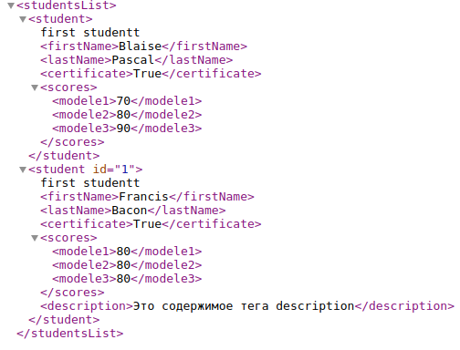

Работа с файлами: чтение, запись, редактирование
В Python, как и в других языках программирования, можно работать с файлами: читать из файла и писать в файл. Это позволяет легко манипулировать любыми файлами из Python.Файловые объекты должны поддерживать основные методы: read(), write(), readline(), readlines(), seek(), tell(), close() и т.п.
Прежде, чем работать с файлом, его надо открыть. Открыть файл можно с помощью встроенной функции open:
f = open('pyplanet.txt', 'r', encoding='utf-8')
У функции open много параметров, нам пока важны 3 аргумента.
Первый, это путь к файлу. Путь к файлу может быть относительным или абсолютным.
В случае относительного пути поиск файла будет производиться относительно директории, из которой была запущена программа на Python. Как правило, это та папка, в которой находится сама программа.
Поэтому, чтобы приведённый выше код выполнился, необходимо создать файл pyplanet.txt в той же папке, что и программа, которую вы пишете.
Однако можно задать и абсолютный путь, например,
f = open(r'D:\files\pyplanet.txt', 'r', encoding='utf-8')Второй аргумент, это режим, в котором мы будем открывать файл.

Режимы могут (и должны) быть объединены, то есть, к примеру, 'rb' - чтение в двоичном режиме. По умолчанию режим равен 'rt'.
И последний аргумент, encoding, нужен только в текстовом режиме чтения файла. Этот аргумент задает кодировку.
Какая кодировка идёт по умолчанию? А неизвестно. Начиная с Python версии 3.15 (это примерно к 2026 году) кодировкой по умолчанию станет utf-8.
В какой же кодировке Ваш файл, зависит от редактора, в котором вы создавали / редактировали файл.
Как правило, это utf-8, или, в более редких случаях, windows-1251.
Функция open возвращает объект файла или по-другому файловый дескриптор.
Чтение из файла
Файл мы открыли, а теперь хотим прочитать из него информацию. Для этого есть несколько способов.
Метод read
Метод read файла, читает весь файл целиком, если был вызван без аргументов, и n символов, если был вызван с аргументом (целым числом n). Возвращает объект типа строка.
>>> f = open('pyplanet.txt', 'r', encoding='utf-8')
>>> f.read(1)
'H'
>>> f.read()
'ello world!\nThe end.\n\n'
Каждый последующий вызов read продолжит читать с того места, на котором остановилось чтение.
Цикл for для чтения файла
Ещё один прочитать файл - сделать это построчно, воспользовавшись циклом for. Файловый объект в Python - тоже итерируемый объект, и в цикле for он возвращает содержимое файла построчно.
>>> f = open('pyplanet.txt', 'r', encoding='utf-8')
>>> for line in f:
... line
...
'Hello world!\n'
'\n'
'The end.\n'
'\n'
readlines
Метод readlines файла, читает весь файл целиком, и в отличии от метода read возвращает не одну цельную строку, а список всех строк в нём. Этот способ более затратный по памяти, чем цикл for, однако иногда тоже может использоваться. Этот метод, как и read читает строки вместе с переводом строки \n .
>>> f = open('pyplanet.txt', 'r', encoding='utf-8')
>>> f.readlines()
['Hello world!\n', '\n', 'The end.\n', '\n']
readline()
Синтаксис:file.readline(size)
Параметры:
size: (необязательно) Здесь вы можете указать число, целое значение для readline(). Он получит строку такого размера. По умолчанию значение размера равно -1, поэтому возвращается вся строка.
Возвращаемое значение
Метод readline() возвращает строку из заданного файла.
это файловый метод, который помогает прочитать одну полную строку из заданного файла. В конце возвращаемой строки имеется завершающая новая строка («\n»).
Вы также можете использовать параметр размера, чтобы получить определенную длину строки. Параметр размера является необязательным, и по умолчанию будет возвращена вся строка.
Характеристики строки чтения Python:
- Метод Python readline() считывает только одну полную строку из заданного файла.
- Он добавляет новую строку («\n») в конце строки.
- Если вы откроете файл в обычном режиме чтения, readline() вернет вам строку.
- Если вы откроете файл в двоичном режиме, readline() вернет вам двоичный объект.
- Вы можете указать размер в качестве аргумента функции readline(), и она получит строку указанного размера, включая новую строку. По умолчанию размер равен 0 (или -1 -?), и он возвращает всю строку.
Пример: Чтобы прочитать первую строку с помощью readline()
Мы собираемся использовать файл demo.txt для чтения содержимого. Содержимое файла demo.txt следующее:
demo.txt Testing - FirstLine Testing - SecondLine Testing - Third Line Testing - Fourth Line Testing - Fifth LineНиже приведены шаги для чтения строки из файла demo.txt.
- Шаг 1) Сначала откройте файл с помощью метода open(), как показано ниже:
myfile = open("demo.txt", "r")Метод open() принимает первый параметр в качестве имени файла, а второй параметр — это режим, в котором вы хотите открыть. Прямо сейчас мы использовали «r», что означает, что файл откроется в режиме чтения. - Шаг 2) Используйте метод readline(), чтобы прочитать строку из файла demo.txt, как показано ниже:
myline = myfile.readline()
- Шаг 3) Прочитанная строка сохраняется внутри myline. Давайте теперь распечатаем строку, чтобы увидеть детали:
print(myline) - Шаг 4) После завершения чтения закройте файл с помощью метода close(), как показано ниже:
myfile.close()
Весь код выглядит следующим образом:myfile = open("demo.txt", "r") myline = myfile.readline() print(myline) myfile.close()Выход:
Testing - FirstLine
Закрытие файла
После манипуляций с файлом, его необходимо закрыть, таким образом, освободив ресурсы файлового дескриптора.f.close()Все дескрипторы, конечно, будут освобождены автоматически при выходе из программы, но что, если программа работает долго? Или она открывает много файлов?
Количество одновременно открытых файлов в системе ограничено.
Здесь очень сильно может помочь конструкция try - finally, так как при возникновении и перехвате исключения можно забыть закрыть файл:
f = open('pyplanet.txt', 'r', encoding='utf-8')
try:
for line in f:
do_something(line)
finally:
f.close()
Запись в файл
Как что-либо записать в файл?Во-первых, необходимо открыть файл в режиме "для записи", иначе ничего не получится:
f = open('pyplanet_output.txt', 'w', encoding='utf-8')
- Метод write
Метод write, записывает строку в файл:f.write("Hello pyplanet!\n")Метод write возвращает количество записанных символов. Не пугайтесь, если в интерактивном режиме увидите цифры - это они и есть.
Перенос строки не добавляется автоматически. Не забывайте добавлять его вручную, иначе строки "слипнутся".
На рисунке показаы 2 способа записи в файл. Число не записывается напрямую, сначало нужно с помощью функции str() преобразовать число в строку. - Аргумент file функции print
Функция print может принимать в качестве аргумента файловый дескриптор для печати.Из плюсов - символ переноса строки поставится за вас:
print("Hello pyplanet!", file=f) - Метод writelines
Метод writelines, записывает список строк в файл:f.writelines(["1\n", "2\n", "3\n"])
Перенос строки, как и в методе write, не добавляется автоматически. Не забывайте добавлять его вручную, иначе строки "слипнутся".
Для записи более сложных структур в Python есть такие средства, как pickle, json, csv, и многие другие.Примеры:
Следующий пример показывает копирование файла:f1 = open("file1.txt", "r") f2 = open("file2.txt", "w") for line in f1.readlines(): f2.write(line) f2.close() f1.close() - Стоит заметить, что кроме собственно файлов в Python используются и файлоподобные объекты. В очень многих функциях просто
неважно, передан ли ей объект типа file или другого типа, если он имеет все те же методы (и в том же смысле). Например,
копирование содержимого по ссылке (URL) в файл file2.txt можно достигнуть, если заменить первую строку из предыдущего примера
на:
import urllib f1 = urllib.urlopen("http://python.onego.ru") - with open() as var
Открыть файл, выполнить с ним нужные операции и автоматически закрыть его после можно с помощью конструкции:with open('name_file') as var s1 = var.readline() s2 = var.readline()По выполнении блока, файловый дескриптор будет удален (файл закроется). Поэтому такая конструкция with open file as f является более рекомендованной по сравнению с f = open file - Полезные методы файлов
- strip()
Удаляет служебные символы при чтении строк файла. - os.path.join(arg1, arg2,...)
Создает из склеивания аргументов полный путь к файлу.
Для того чтобы выполнить этот метод, нужно импортировать модуль os (import as).
- strip()
- Пример построчного чтения файла
with open('input.txt') as inf: for line in inf: line = line.strip() print()
Как скачать сайт или вебстраницу
Код:
from urlib.request import urlopen
# html = urlopen("https://dzen.ru/").read().decode('utf-8')
html = urlopen("https://ru.wikipedia.org/wiki/Python").read().decode('utf-8')
print(html)
urlib.request - это расширенная библиотека для открытия url адресов.
html имеет тип str, который будет равен коду веб-страницы.
Почему-то не на всех страницах работает, например на dzen.ru получаю пустой текст внутри тега body или вообще ошибку.
Парсинг html xml страниц
Ссылки: книга Митчелл Райан Парсинг с помощью Python 3-издание 2025 год
Веб-скрапинг - автоматизированный сбор данных в Интернете.
веб-краулеры - специализированные программы, которые позволяют просматривать несколько веб-страниц.
Боты - программы, предназначенные для веб-скрапинга.
В языке Python библиотеки (пакеты), предназначенные для анализа HTML-разметки, можно разделить на две группы:
- Низкоуровневые процессоры. Компактные, но синтаксически запутанные пакеты со сложной реализацией, которые выполняют разбор синтаксиса HTML (или XML) и строят иерархическое дерево элементов.
- Высокоуровневые библиотеки и фреймворки. Обширные, но синтаксически лаконичные пакеты, обладающие широким набором функций для извлечения формализованных данных из сырых HTML-документов. В эту группу входят не только компактные HTML-парсеры, но и полноценные системы сборки. Зачастую такие пакеты в качестве ядра парсинга используют низкоуровневые пакеты (процессоры) из предыдущей группы.
Для Python написано несколько низкоуровневых библиотек:
- lxml. Низкоуровневый процессор синтаксиса XML, который также используется для анализа HTML. В его основе лежит популярная библиотека libxml2, написанная на языке C.
- html5lib. Библиотека анализа синтаксиса HTML, написанная на чистом Python в соответствии с HTML-спецификацией от организации WHATWG (The Web Hypertext Application Technology Working Group), которой следуют все современные браузеры.
Тем не менее, использование высокоуровневых библиотек быстрее и проще — их синтаксис понятнее, а набор функций шире:
- BeautifulSoup. Простая, но гибкая библиотека для Python, позволяющая парсить документы на HTML и XML путем создания полноценного DOM-дерева элементов с последующим извлечением необходимых данных.
- Scrapy. Полноценный фреймворк парсинга данных из HTML-страниц, представляющий собой набор автономных «пауков» (веб-краулеров) с заданными инструкциями.
- Selectolax. Довольно быстрый парсер HTML-страниц, использующий так называемые CSS-селекторы для извлечения информации из тегов.
- Parsel. Библиотека со специфическим синтаксисом селекторов, написанная на Python, позволяющая извлекать данные из документов на HTML, JSON и XML.
- requests-html. Удобная библиотека, написанная на Python, которая практически точь-в-точь имитирует браузерные CSS-селекторы языка JavaScript.
Форматы файлов
YAMLYAML (рекурсивный акроним: «YAML Ain't Markup Language» — «YAML — не язык разметки»).
- отступы из пробелов (символы табуляции не допускаются) используются для обозначения структуры
- комментарии начинаются с символа «решётки» (#), могут начинаться в любом месте строки и продолжаются до конца строки
- списки обозначаются начальным дефисом (-) с одним членом списка на строку, либо члены списка заключаются в квадратные скобки ([ ]) и разделяются запятой и пробелом (, )
- ассоциативные массивы в виде key: value, по одной паре ключ-значение на строку, либо в виде пар, заключённых в { } и разделенных запятой и пробелом (, )
Пример:
# comment
database:
host: localhost
port: 5432 # comment
username: admin
password: "admin123"
logging:
level: info
file: app.log
modules:
data_processor:
batch_size: 100
retry_attempts: 3
machine_learning:
model: "xgboost"
learning_rate: 0.01
ids: [1, 2, 3, 4, 5]
users:
- { name: Alice, role: admin }
- { name: Bob, role: editor }
- { name: Charlie, role: viewer }
|
Открытие и чтение файла:
from yaml import load
with open('config.yml', 'r') as f:
data = load(f)
print(data['version'])
Если получено сообщение: "YAMLLoadWarning: calling yaml.load() without Loader=... is deprecated, as the default Loader is unsafe"Функция load принимает строку в качестве аргумента. Вы передаете в load не текст из файла, а строку "config.yaml" . Поэтому лучше строку data = load(f) заменить на yaml.safe_load(f) , а импорт на from yaml import safe_load
JSON
JavaScript Object Notation — текстовый формат обмена данными, основанный на JavaScript. Как и многие другие текстовые форматы, JSON легко читается людьми.
Плюсы:
- Легко читается и поддерживается во всех ЯП.
- Строгий формат
- Лишён недостатков YAML в плане неоднозначности, разночтений и проблем с безопасностью
Минусы:
-
Не поддерживает комментарии.
- Не слишком удобен для «работы руками» (слишком строгий)
- Лучше подходит, когда с конфигом не работают напрямую «руками» а есть какой-то другой интерфейс для конфигурирования
- Больше подходит как формат обмена данными нежели для хранения конфигурации (на мой вкус)
{
"logs": {
"actions": "/var/log/myservice/action.log",
"errors": "/var/log/myservice/error.log",
},
"database": {
"host": "localhost",
"port": 5432,
"username": "user",
"password": "pass"
},
"array": [1, 2, 3, 4, 5]
}
Чтение файла:
import json
with open('config.json', 'r') as f:
data = json.load(f)
print(data['version'])
Работа с изображениями с html-страницы
Загрузка изображенийКак выполнять парсинг изображений с сайта на Python
Имеем url изображения, нужно это изображение с url скачать в свою локальную папку images.
Самый простой способ скачать изображение в Python — использовать метод urlretrieve() из пакета url.request стандартной библиотеки. Эта функция копирует сетевой объект, указанный URL-адресом, в локальный файл.
Сначало импортируем модуль:
import urllib.requestЗагружаем:
name_file = f'images/{i}.png'
urllib.request.urlretrieve(url, name_file)
Запись изображений в xlsx файл
Для импорта изображений в нашу таблицу мы будем использовать метод, который находится в библиотеке openpyxl под названием openpyxl.drawing.image.Image. Этот метод является оболочкой для метода PIL.Image, который находится в библиотеке PIL (pillow). Поэтому для использования этого метода необходимо установить библиотеку PIL (pillow).
import openpyxl
from openpyxl import Workbook
from openpyxl.drawing.image import Image
#Create a workbook object
wb_image = Workbook()
#Active sheet
ws_image = wb_image.active
#Specify image to be placed in the active sheet
img = openpyxl.drawing.image.Image('logo.png')
#Setting image height and width
img.height = 50
img.width = 50
#Using add_image sheet attribute
ws_image.add_image(img, 'C5')
#Create a new Workbook and save the image
wb_image.save("wb_image_ex.xlsx")
Как записать изображение в excel таблицу с url сразу без локального сохранения
Example: Inserting images from a URL or byte stream into a worksheet
from io import BytesIO
from urllib.request import urlopen
import xlsxwriter
# Create the workbook and add a worksheet.
workbook = xlsxwriter.Workbook("images_bytesio.xlsx")
worksheet = workbook.add_worksheet()
# Read an image from a remote url.
url = (
"https://raw.githubusercontent.com/jmcnamara/XlsxWriter/"
+ "master/examples/logo.png"
)
image_data = BytesIO(urlopen(url).read())
# Write the byte stream image to a cell. Note, the filename must be
# specified. In this case it will be read from url string.
worksheet.insert_image("B2", url, {"image_data": image_data})
# Read a local image file into a a byte stream. Note, the insert_image()
# method can do this directly. This is for illustration purposes only.
filename = "python.png"
image_file = open(filename, "rb")
image_data = BytesIO(image_file.read())
image_file.close()
# Write the byte stream image to a cell. The filename must be specified.
worksheet.insert_image("B8", filename, {"image_data": image_data})
workbook.close()
|
Другой способ:
from urllib.request import urlopen
url = "http://abcdef.com/picture.jpg"
data = urlopen(url).read()
file = open("image.jpg", "wb")
file.write(data)
file.close()
worksheet.insert_image('B2', 'image.jpg')
Мой рабочий пример:
from io import BytesIO
from urllib.request import urlopen
import openpyxl
from openpyxl.drawing.image import Image
wb = openpyxl.Workbook()
sheet = wb.active
# Read an image from a remote url.
url = "http://myridia.com/assets/images/logo.png"
image_data = BytesIO(urlopen(url).read())
img = Image(image_data)
sheet.add_image(img, 'A2')
wb.save("test.xlsx")
Библиотека urllib
urllib - это пакет, который состоит из нескольких модулей для работы с URL-адресами::- urllib.request: для открытия и чтения URL-адресов;
- urllib.parse: для работы с компонентами URL-адресов;
- urllib.error: для обработки ошибок, возникающих при работе с URL-адресами;
- urllib.robotparser: для анализа файла robots.txt.
Модуль urllib.request
Модуль urllib.request содержит функции и классы, которые помогают открывать URL—адреса (в основном HTTP) в комплексе - базовая и дайджест-аутентификация, перенаправления, файлы cookie и многое другое. Содержит функции:- Функция urlopen
открывает удаленный объект по сети и читает его. Это универсальная функция, она одинаково легко читает НТМL файлы, файлы изображений и другие файловые потоки. Синтаксис:urllib.request.urlopen(url, data=None, [timeout, ]*, context=None)
url - строка, содержащая действительный, правильно закодированный URL-адрес, либо объект запроса.data - объект, указывающий дополнительные данные для отправки на сервер, или отсутствовать, если такие данные не требуются.
Необязательный параметр timeout указывает время ожидания в секундах для блокировки таких операций, как попытка подключения (если не указано, будет использоваться глобальное значение времени ожидания по умолчанию). На самом деле это работает только для HTTP, HTTPS и FTP-подключений.
context, если указан, то это должен быть экземпляр ssl.SSLContext, описывающий различные параметры SSL. Более подробную информацию смотрите в разделе HTTPSConnection.
Эта функция всегда возвращает объект, который может работать как контекстный менеджер и имеет свойства url, заголовки и статус.
Для URL-адресов HTTP и HTTPS эта функция возвращает http.client.Объект HttpResponse слегка изменен. В дополнение к трем новым методам, описанным выше, атрибут msg содержит ту же информацию, что и атрибут reason — фразу причины, возвращаемую сервером, вместо заголовков ответа, как указано в документации для HttpResponse.
from urllib.request import urlopen url = "https://stepik.org/media/attachments/lesson/245681/map2.osm" response = urlopen(url) print(response.read())
Этот код открывает указанный URL-адрес и выводит его содержимое. Обратите внимание, что содержимое возвращается в виде байтов, поэтому его можно декодировать в строку, используя метод decode():print(response.read().decode('utf-8')) - urllib.request.install_opener(opener)
Установит экземпляр OpenerDirector в качестве глобального средства открывания по умолчанию. Установка средства открывания необходима только в том случае, если вы хотите, чтобы urlopen использовал это средство открывания; в противном случае просто вызовите OpenerDirector.open() вместо urlopen(). Код не проверяет наличие реального OpenerDirector, и любой класс с соответствующим интерфейсом будет работать. -
urllib.request.build_opener([handler, ...])
Возвращает экземпляр OpenerDirector, который объединяет обработчики в цепочку в указанном порядке. обработчики могут быть либо экземплярами BaseHandler, либо подклассами BaseHandler (в этом случае должна быть предусмотрена возможность вызова конструктора без каких-либо параметров). Экземпляры следующих классов будут находиться перед обработчиками, если только обработчики не содержат их, их экземпляры или их подклассы: ProxyHandler (если обнаружены настройки прокси-сервера), UnknownHandler, HttpHandler, HTTPDefaultErrorHandler, HTTPRedirectHandler, FTPHandler, FileHandler, HTTPErrorProcessor. -
urllib.request.pathname2url(path)
"Your browser does not support javascript"
Большинство современных сайтов не отдают данные напрямую в виде статической HTML разметки. Страницы формируются «на лету» с использованием JavaScript.Пытался парсить сайт https://pari.ru/live/tennis:
import urllib.request
from bs4 import BeautifulSoup
url ='https://pari.ru/live/tennis'
user_agent = 'Mozilla/5.0 (Windows; U; Windows NT 5.1; en-US; rv:1.9.0.7) Gecko/2009021910 Firefox/3.0.7'
headers={'User-Agent':user_agent,}
request=urllib.request.Request(url,None,headers)
html = urllib.request.urlopen(request)
bs = BeautifulSoup(html, 'html.parser')
print(bs)
и ошибок нет, но содержимое страницы отсутствует. В html-коде можно прочитать: "Your browser does not support javascript" Это сообщение об ошибке означает, что веб-сайт, к которому вы пытаетесь получить доступ с помощью Python Requests, для корректной работы требует JavaScript. Поскольку Python Requests не поддерживает JavaScript, вам нужно будет найти другой способ получить доступ к данным веб-сайта. Есть несколько различных способов обойти эту ошибку:
- Используйте другую библиотеку.
Если вам нужно собирать данные с веб-сайтов, для которых требуется JavaScript, вы можете использовать другую библиотеку, например Selenium. Selenium — это библиотека Python, которая позволяет автоматизировать веб-браузеры и взаимодействовать с веб-сайтами, для которых требуется JavaScript. - Использовать API на сайте:
На некоторых веб-сайтах есть API, которые позволяют получить доступ к данным без использования JavaScript. Вы можете попытаться выполнить реверс-инжиниринг API, чтобы понять, как получить доступ к нужным вам данным. - Попробуйте использовать браузер без графического интерфейса:
браузер без графического интерфейса — это веб-браузер, который работает без графического пользовательского интерфейса. Вы можете использовать браузер без графического интерфейса, например PhantomJS или Headless Chrome, для доступа к веб-сайтам, для которых требуется JavaScript.
Beautiful Soup
Ссылки: BeautifulSoup – парсинг HTML в Python на примерахДокументация
Парсинг сайтов на Python: Руководство для новичков
Ещё ссылка
книга Митчелл Райан Парсинг с помощью Python стр. 74
Библиотека BeautifulSoup позволяет легко извлекать информацию из XML и HTML-документов. Она преобразует HTML в дерево объектов, с которым можно работать для извлечения нужных данных. Также часто используется для скрапинга веб-страниц. BeautifulSoup позволяет трансформировать сложный HTML-документ в сложное древо различных объектов Python. Это могут быть теги, навигация или комментарии.
Установка Beautiful Soup
Для установки необходимых модулей используется команда pip3.
Для начала требуется установить lxml модуль, который используется в BeautifulSoup.
$ sudo pip3 install lxmlДалее сам bs 4 версия:
$ sudo pip3 install bs4
Создание супа
Прогон документа через Beautiful Soup дает нам объект BeautifulSoup (обычно говорят, что создали суп), который представляет документ в виде вложенной структуры данных:
from bs4 import BeautifulSoup
html_doc = """
<html>
<head>
<title>
The Dormouse's story
</title>
</head>
<body>
<p class="title">
<b>
The Dormouse's story
</b>
<p class="story">
Once upon a time there were three little sisters; and their names were
<a class="sister" href="http://example.com/elsie" id="link1">
Elsie
</a>
,
<a class="sister" href="http://example.com/lacie" id="link2">
Lacie
</a>
and
<a class="sister" href="http://example.com/tillie" id="link3">
Tillie
</a>
;
and they lived at the bottom of a well.
</p>
<p class="story">
...
</p>
</p>
</body>
</html>
"""
soup = BeautifulSoup(html_doc, 'html.parser') # создаем суп
|
Здесь для простоты будем парсить строку html_doc, представляющую собой html код. Обычно в реальности парсят какой-нибудь url адрес через urlllib.requests.
from urllib.request import urlopen from bs4 import BeautifulSoup url = 'http://www.domen.ru/index.html') html = urlopen(url) bs = BeautifulSoup(html.read(), 'html.parser') print(bs.h1)
Обработка исключений при использовании urlopen()
На строке html = urlopen(url) могут случиться две основные неприятности:- на сервере нет такой страницы (или при ее получении произошла ошибка);
- нет такого сервера.
from urllib.request import urlopen
from urllib.error import HTTPError
url = 'http://www.domen.ru/index.html')
try:
html = urlopen(url)
except HTTPError as е:
print(e)
# вернуть ноль, прекратить работу
# или выполнить еще какой-нибудь "план Б"
else:
# Продолжить выполнение программы.
# Примечание: если при перехвате исключений
# программа прерывает работу или происходит возврат
# из функции, то оператор else не нужен.
Если теперь код столкнется с ошибкой НТТР, то он выведет сообщение о ней и остальная часть программы, которая находится в ветви
else, не выполнится. Если сервер вообще не будет найден (например, если сервер по адресу url отключен или URL указан с ошибкой), то функция urlopen вернет URLError. Эта ошибка говорит о том, что ни один из указанных серверов недоступен. Поскольку именно удаленный сервер отвечает за возвращение кодов состояния НТТР, ошибка HTTPError не может быть выдана и вместо нее следует обрабатывать более серьезную ошибку URLError. Для этого можно добавить в программу следующую проверку:
from urllib.request import urlopen
from urllib.error import HTTPError
from urllib.error import URLError
try:
html = urlopen('https://pythonscrapingthisurldoesnotexist.com')
except HTTPError as е:
print(e)
except URLError as е:
print('The server could not Ье found!')
else:
print('It Worked! ')
Конечно, даже если страница успешно получена с сервера, все равно остается проблема с ее контентом, который не всегда соответствует ожидаемому. Всякий раз, обращаясь к тегу в объекте BeautifulSoup, разумно добавить проверку того, существует ли этот тег. При попытке доступа к несуществующему тегу Beautifu!Soup возвращает объект None.
Создаём суп на основе строки (html кода), который представляет собой объект в виде дерева из структуры внешних вложенных тегов и содержимого внутри и между тегами.
print(soup)
print("Тип супа=", type(soup))
Вывод:
<html>
<head>
<title>
The Dormouse's story
</title>
</head>
<body>
<p class="title">
<b>
The Dormouse's story
</b>
<p class="story">
Once upon a time there were three little sisters; and their names were
<a class="sister" href="http://example.com/elsie" id="link1">
Elsie
</a>
,
<a class="sister" href="http://example.com/lacie" id="link2">
Lacie
</a>
and
<a class="sister" href="http://example.com/tillie" id="link3">
Tillie
</a>
;
and they lived at the bottom of a well.
</p>
<p class="story">
...
</p>
</p>
</body>
</html>
Тип супа= <class 'bs4.BeautifulSoup'>
Второй аргумент функции beautifulsoup() 'html.parser' : парсер, который BeautifulSoup будет использовать для создания
объекта. В большинстве случаев не имеет значения, какой именно парсер будет использоваться. Парсер html.parser входит в состав
Python 3 и не требует дополнительной настройки перед использованием. Еще один популярный парсер lxml. Он устанавливается через pip:
pip install lxmlПреимущество lxml по сравнению с html.parser состоит в том, что lxml в целом лучше справляется с «грязным~> или искаженным НТМL-кодом. Парсер lxml прощает неточности и исправляет такие проблемы, как незакрытые и неправильно вложенные теги, а также отсутствующие теги head или body. Кроме того, lxml работает несколько быстрее, чем html.parser, хотя при веб-скрапинге скорость парсера не всегда является преимуществом, поскольку почти всегда главное слабое место - скорость самого сетевого соединения. Одним из недостатков анализатора lxml является то, что его необходимо специально устанавливать и он зависит от сторонних С-библиотек. Это может вызвать проблемы портируемости; кроме того, html.parser проще в использовании. Еще один популярный парсер HTML называется htmlSlib . Подобно lxml, он чрезвычайно лоялен к ошибкам и прилагает еще больше усилий к исправлению некорректного НТМL-кода. Он также имеет внешние зависимости и работает медленнее, чем lxml и html.parser. Тем не менее выбор htmlSlib может быть оправданным при работе с грязными или написанными вручную НТМL страницами. Чтобы использовать этот анализатор, нужно установить его и передать объекту BeautifulSoup строку htmlSlib:
bs = BeautifulSoup(html.read(), 'html5lib')
К этому полученному объекту - супу можем применять различные методы, атрибуты для получения нужной информации.
Метод find(tag)
Синтаксис:find(tag, attrs, recursive, text, **kwargs)отыскивает первый тег tag в супе:
print(soup.find('a'))
print("Тип soup.find('a')=", type(soup.find('a')))
Вывод:
<a class="sister" href="http://example.com/elsie" id="link1">
Elsie
</a>
Тип soup.find('a')= <class 'bs4.element.Tag'>
Метод find_all(tag)
Синтаксис:find_all(tag, attrs, recursive, text, limit, **kwargs)Параметр tag; мы можем передать в нем строку, содержащую имя тега, или даже Руthоn-список имен тегов. Например, следующий код возвращает список всех тегов заголовков, встречающихся в документе :
.find_all(['hl', 'h2', 'hЗ', 'h4', 'h5', 'hб'))
Параметр attrs: принимает Руthоn-словарь атрибутов и ищет теги, которые содержат любой из этих атрибутов. Например, следующий вызов отыщет в НТМL документе теги span с классом green или red:
.find_all( 'span', {'class': [ 'green', 'red' ]})
Параметр recursive - логический. Насколько глубоко вы хотите исследовать recursive передать значение True, то функция find_all будет искать теги, соответствующие заданным параметрам, в дочерних элементах и их потомках. Если в этом параметре передать False, то функция будет просматривать только теги верхнего уровня документа. По умолчанию find_all работает рекурсивно (recurive имеет значение True); обычно лучше оставить все как есть, за исключением ситуаций, когда вы точно знаете, что делаете, и нужно обеспечить высокую производительность.Параметр text необычен тем, что определяет текстовое содержимое, а не свойства тегов. Так, чтобы узнать, сколько раз на странице встречаются слова 'the рrince'заключенные в теги, можно заменить функцию .find_all(), из предыдущего примера на следующие строки:
namelist = bs.find_all(text='the prince') print(len(namelist))Результатом будет число 7
Параметр limit по понятным причинам используется только в методе find_all;
функция find эквивалентна вызову find_all со значением limit, равным 1. Этот параметр можно использовать в тех случаях, когда нужно извлечь только первые х элементов, присутствующих на странице. Однако следует учитывать, что вы получите первые элементы в порядке их появления на странице, и это вовсе не обязательно будут те элементы, которые вам нужны.
Параметр kwargs позволяет передать в вызов метода любые дополнительные именованные аргументы. Именованные аргументы, которые find и find_all не смогут распознать, будут интерпретироваться как определения искомых атрибутов и их значений. Например:
title = bs.find_all(id='title', class_='text')вернет первый тег со словом text в атрибуте class и словом title в атрибуте id. Обратите внимание: по соглашению все атрибуты id на странице должны иметь уникальные значения. Поэтому на практике такой вызов может быть не особенно полезен и должен быть эквивалентен следующему:
title = bs.find(id='title')В языке Python class - зарезервированное слово, которое нельзя использовать в качестве имени переменной или аргумента. Например, попытка выполнить следующий код приведет к синтаксической ошибке из-за нестандартного использования слова class: bs.find_all(class='green')
По этой причине BeautifulSoup требует использовать именно аргумент _class вместо атрибута class.
Пример:
print(soup.find_all('a'))
print("Тип soup.find_all('a')=", type(soup.find_all('a')))
Вывод:
[<a class="sister" href="http://example.com/elsie" id="link1">
Elsie
</a>, <a class="sister" href="http://example.com/lacie" id="link2">
Lacie
</a>, <a class="sister" href="http://example.com/tillie" id="link3">
Tillie
</a>]
Тип soup.find_all('a')= <class 'bs4.element.ResultSet'>
Фактически метод возвращает список всех найденных тегов со всем содержимым.
Метод find_all() в качестве аргумента может использовать список из названий тегов.
tags = soup.find_all(['a', 'p']) # список из тегов a и p
for tag in tags:
print(tag)
|
Для более тонкого извлечения информации используют атрибуты, например атрибут name выводит имя тега, атрибут text - текст между открывающимся и закрывающимся тегом tag:
for tag in soup.find_all("a"):
print(f"имя тега - {tag.name}, содержимое тега - {tag.text.strip()}")
Вывод:
имя тега - a, содержимое тега - Elsie
имя тега - a, содержимое тега - Lacie
имя тега - a, содержимое тега - Tillie
Примеры обработки супа и решения различных задач:
Одна из распространенных задач — извлечь все URL-адреса, найденные на странице в тегах <a>:
for link in soup.find_all('a'):
print(link.get('href'))
# http://example.com/elsie
# http://example.com/lacie
# http://example.com/tillie
|
Другая распространенная задача — извлечь весь текст со страницы:
print(soup.get_text()) # The Dormouse's story # # The Dormouse's story # # Once upon a time there were three little sisters; and their names were # Elsie, # Lacie and # Tillie; # and they lived at the bottom of a well. # # ... |
Также можно найти запрашиваемые элементы, используя регулярные выражения:
import re
from bs4 import BeautifulSoup
with open("index.html", "r") as f:
contents = f.read()
soup = BeautifulSoup(contents, 'lxml')
strings = soup.find_all(string=re.compile('BSD'))
for txt in strings:
print(" ".join(txt.split()))
|
В данном примере выводится содержимое элементов, в которых есть строка с символами ‘BSD’.
Парсинг веб-страницы по содержимому определенного тега
Задача: В файле https://stepik.org/media/attachments/lesson/209723/3.html находится одна таблица. В ячейках только числа. Просуммируйте все числа в ней и введите в качестве ответа одно число - эту сумму.
from urllib.request import urlopen
import re # для 1 способа
from bs4 import BeautifulSoup # для 2 способа
html = urlopen("https://stepik.org/media/attachments/lesson/209723/3.html").read().decode('utf-8')
summa = 0
# 1 способ с помощью регулярных выражений
'''
pattern = '<td>(.*?)</td>'
lst1 = re.findall(pattern, html)
for i in lst1:
summa += int(i)
print(summa)
'''
# 2 способ с помощью библиотеки bs4
soup = BeautifulSoup(html, 'html.parser')
for i in soup.find_all("td"):
summa += int(i.text)
print(summa)
|
Задачу можно решить двумя способами: с помощью регулярных выражений и с помощью библиотеки BeautifulSoup.
В первом способе функция findall возвращает список, в список входят все вхождения внутри <td> </td>
Во втором способе получаем сначала суп из строки html. А потом с помощью метода find_all и .text получаем содержимое внутри всех нужных тегов.
Причем будет выдавать содержимое внутри тега td даже если внутри находятся другие теги. В этом случае выдает содержимое внутри td и внутренних тегов.
Даже если будут ошибочные внутренние теги, все равно выдаст правильный результат.
В последнем случае, если решать через регулярные выражения, то pattern = r'\D(\d+?)\D'
Примеры из книги Python библиотеки, автор Джейд Картер стр. 128
BeautifulSoup предоставляет множество методов для сложных задач, например, извлечение ссылок, изображений или фильтрация элементов.Пример задачи: Сбор всех ссылок с веб-страницы.
from bs4 import BeautifulSoup
import requests
# URL страницы для парсинга
url = "https://www.gazeta.ru/"
# Отправка HTTP-запроса и получение HTML-кода страницы
response = requests.get(url) # 200
html_content = response.text
# Создание объекта BeautifulSoup
soup = BeautifulSoup(html_content, "html.parser")
links = soup.find_all("a")
# Фильтрация ссылок и их вывод
for link in links:
href = link.get("href")
if href and href.startswith("http"):
print("Ссылка:", href, "Текст ссылки:", link.text.strip())
|
В данном примере мы:
1. Отправили запрос на веб-сайт gazeta.ru.
2. Получили HTML-код страницы.
3. С помощью BeautifulSoup нашли все теги a.
4. Вывели на экран url ссылки и текст.
Практическое применение: Такой парсинг может быть использован для мониторинга новостных сайтов, отслеживания статей о вашей
компании или конкуренте.
Библиотека Scrapy
Если BeautifulSoup удобен для небольших задач, то Scrapy подходит для масштабных проектов, таких как сбор данных с сотен или тысяч страниц. Это мощный инструмент, поддерживающий многопоточность, обработку JavaScript и управление сложными потоками данных. Пример задачи: Сбор информации о товарах из интернет-магазина.
1. Установите Scrapy:
```bash
pip install scrapy
```
2. Создайте новый проект:
```bash
scrapy startproject ecommerce_parser
```
3. В папке проекта создайте паука (специальный класс для
парсинга):
```bash
scrapy genspider products example-ecommerce-site.com
```
4. В файле `products.py` настройте паука:
```python
import scrapy
class ProductsSpider(scrapy.Spider):
name = "products"
start_urls = ["https://example-ecommerce-site.com/category"]
def parse(self, response):
# Извлечение информации о товарах
for product in response.css("div.product"):
yield {
"name": product.css("h3.product-title::text").get(),
"price": product.css("span.price::text").get(),
"availability": product.css("span.availability::text").get(),
}
# Переход на следующую страницу
next_page = response.css("a.next-page::attr(href)").get()
if next_page:
yield response.follow
|
Объяснение работы кода:
1. Паук начинает с указанного URL (`start_urls`).
2. С помощью CSS-селекторов извлекается информация о товарах (название, цена, доступность).
3. Если на странице есть кнопка перехода на следующую страницу (`a.next-page`), паук автоматически переходит на неё и продолжает парсинг.
4. Запустите паука:
```bash
scrapy crawl products -o products.json
```
Этот код сохраняет собранные данные в файл `products.json`.
Пример реального применения Scrapy: Сбор данных о вакансиях
Для сбора информации о вакансиях можно настроить Scrapy для работы с популярными сайтами поиска работы. Например, собрать
названия вакансий, зарплаты и местоположения.
В терминале:
scrapy startproject trudvsem cd trudvsem/spidersВ spiders скрипт jobs_spider.py:
import scrapy
class JobsSpider(scrapy.Spider):
name = "jobs"
start_urls = ["https://trudvsem.ru"]
def parse(self, response):
for job in response.css("div.job-listing"):
yield {
"title": job.css("h2.title::text").get(),
"salary": job.css("span.salary::text").get(),
"location": job.css("span.location::text").get(),
}
# Переход на следующую страницу
next_page = response.css("a.next-page::attr(href)").get()
if next_page:
yield response.follow(next_page, self.parse)
|
В терминале: scrapy crawl jobs -o jobs.json
Появился файл jobs.json но в нем ничего нет.
Такой парсинг может быть полезен для анализа рынка труда, отслеживания предложений в конкретной сфере или для построения собственного поисковика вакансий.
Преимущества и недостатки инструментов
BeautifulSoup:
– Простота в использовании и настройке.– Подходит для небольших и средних задач.
– Меньше контроля над сложными сценариями, такими как переход по страницам или обработка AJAX.
Scrapy:
– Высокая производительность и гибкость.
– Возможность масштабного сбора данных.
– Более сложная настройка, особенно для новичков.
Эти инструменты являются мощными инструментами автоматизации сбора данных и широко используются как в коммерческих, так и в исследовательских проектах. Выбор между BeautifulSoup и Scrapy зависит от сложности задачи и объема данных, которые необходимо собрать.
==============================================================================================================================
Работа с excel-файлами (xlsx, csv)
Ссылки: Как читать excel-файлы (xlsx) при помощи PythonШпаргалка по pandas
Для работы с excel-файлами чаще всего применяют библиотеки xlrd, pandas, openpyxl.
Чтобы узнать установлена у вас та или библиотека (пакет), можно использовать команду:
pip show name_librЕсли библиотека установлена, то выведет версию библиотеки, другую информацию. Если же нет, то выведет:
WARNING: Package(s) not found: xlrd
Библиотека pandas
Ссылки: Getting started tutorialsПеревод начала этой документации
Полное руководство по Pandas для начинающих
Гайд по обработке данных с помощью Pandas: часть первая
Книга Картер Дж. Python Библиотеки стр. 18
Применяется для обработки и анализа таблиц.
Библиотека не встроенная и её надо устанавливать:
pip install pandasОбычно ее импортируют подобным образом:
import pandas as pdpandas работает с двумя типами объектов:
- Series — одномерный массив, который может хранить значения любого типа данных;
- DataFrame — двумерный массив (таблица), в котором столбцами являются объекты класса Series.
Объект класса Series
Series — это одномерный массив данных с метками. Он может хранить различные типы данных, включая числа, строки и произвольные объекты Python. Каждому элементу в Series соответствует метка, доступ к которой можно получить через атрибут index.Создать объект класса Series можно следующим образом:
s = pd.Series(data, index=index)В качестве data могут выступать: список, массив numpy, словарь, число.
Прочитанная таблица не может выступать в качестве data. поскольку она представляет не одномерный массив данных (словарь).
В аргумент index передаётся список меток осей. Чтобы понять, что такое метка, нужно понимать что объект Series - это аналог словаря, тогда метка - это ключ этого словаря. Метка может быть числом, но чаще используются метки-строки.
Если data является массивом numpy, то index должен иметь такую же длину, как и data. Если аргумент index не передаётся, то по умолчанию для index автоматически назначается список [0, ..., len(data) - 1]:
import pandas as pd
obj_series = pd.Series([1, 2, 3], index=["a", "b", "c"])
print(obj_series)
print("-----------------------------------------")
print(obj_series.index)
|
Вывод: a 1 b 2 c 3 dtype: int64 ----------------------------------------- Index(['a', 'b', 'c'], dtype='object')
Если data задаётся числом, то index нужно обязательно передать. Количество элементов в Series будет равно числу меток в index, а значения будут равны data:
index = ["a", "b", "c"] print(pd.Series(5, index=index)) Вывод программы: a 5 b 5 c 5 dtype: int64Есть проводить аналогию со словарём dict, то индекс объекта Series — это ключи словаря, представляющий собой имя строки, а сам массив данных — значения, к которым можно получить доступ по ключу:
obj_series["b"] # Получаем доступ к строке 'b', как по ключу в словаре
Более подробная информация по объектам Series на странице 6.2. Модуль pandas.
Объект класса DataFrame
DataFrame — это двумерная структура данных, представляющая собой таблицу с метками для строк и столбцов. Каждый столбец в DataFrame является объектом типа Series. Вместе они формируют двумерную таблицу с общим индексом. В DataFrame присутствуют две оси индексации: index для строк и columns для столбцов. Метки столбцов — это их названия.Список индексов строк объектов DataFrame и Series можно получить с помощью атрибута index, а метки столбцов через атрибут columns или в виде списка приведением объекта в список:
import pandas as pd
df1 = pd.read_excel('food.xlsx')
print(df1)
'''
Продукты Количество Цена
0 апельсины 76 100
1 бананы 1000 150
2 гречка 1500 20
3 сахар 500 54
4 соль 6 20
5 рис 78 90
'''
print(df1.index) # RangeIndex(start=0, stop=6, step=1)
print(df1.Продукты.index) # индекс столбца, представляющего собой объект типа Series
# RangeIndex(start=0, stop=6, step=1)
print(df1.columns) # Index(['Продукты', 'Количество', 'Цена'], dtype='object')
print(df1.columns[0]) # Продукты
print(list(df1)) # ['Продукты', 'Количество', 'Цена']
Если нужно изменить значение индексов или имя столбца с индексами:
df_orders.index = range(0,16,2) # поменяли значения индексов df_orders.index.name = 'New indexes' # присвоили столбцу индексов имя 'New indexes' print(df_orders.head()) # => shop_1 shop_2 shop_3 shop4 # New indexes # 0 7.0 1 7.0 8 # 2 4.0 2 4.0 5 # 4 3.0 5 NaN 3 # 6 8.0 12 8.0 7 # 8 15.0 11 13.0 9Строковые индексы обычно называются метками или ключами.
Создание датафрейма
Датафрейм обычно создается методом чтения файлов: read_, но можно создать и через словарь методом DataFrame:
>>> a = 2
>>> b = 3
>>> df = pd.DataFrame({'A': [a], 'B': [b]})
>>> df
A B
0 2 3
a и b обязательно заключать в квадратные скобки иначе ошибка: "ValueError: If using all scalar values, you must pass an index" или если без квадратных скобок, тогда указывать индекс:
>>> df = pd.DataFrame({'A': a, 'B': b}, index=[0, 3])
>>> df
A B
0 2 3
3 2 3
Вывод определенного столбца:
import pandas as pd
excel_data = pd.read_excel('salaries.xlsx')
print(excel_data['Программист'])
Вывод:
0 765
1 87
2 987595
3 9876
4 8769
5 189710
6 65
7 769
Name: Программист, dtype: int64
Выводит столбец Программист, но вместе со столбцом индекса. Чтобы вывести нужный столбец без столбца индекса, только через перебор:
for i in excel_data['Программист']:
print(i)
Получение определённых строк
Для строк у нас есть два варианта:- .loc — определяет местоположение по имени строки (метке).
- .iloc — определяет местоположение по числовому индексу строки.
Метки указываются в квадратных скобках, до запятой строки, после столбцы.
Примеры будем рассматривать на основе файла food.xlsx:
import pandas as pd
sh1 = pd.read_excel("food.xlsx")
print(sh1)
Вывод:
Продукты Количество Цена
0 апельсины 76 100
1 бананы 1000 150
2 гречка 1500 20
3 сахар 500 54
4 соль 6 20
5 рис 78 90
print(sh1.loc[3:4]) # строки с метками строк 3 и 4
print("-----------------")
print(sh1.iloc[0, 1]) # ячейка на пересечении 0 строки и 1 столбца
print("-----------------")
print(sh1.loc[0, 'Количество']) # та же ячейка, но строка и столбец указаны через метки
print("-----------------")
print(sh1.iloc[0:6, [0, 2]]) # срезы. строки от 0 до 5 включительно, а столбцы 0 и 2
print("-----------------")
print(sh1.loc[0:4, ['Продукты', 'Цена']])
Вывод программы:
Продукты Количество Цена
3 сахар 500 54
4 соль 6 20
-----------------
76
-----------------
76
-----------------
Продукты Цена
0 апельсины 100
1 бананы 150
2 гречка 20
3 сахар 54
4 соль 20
5 рис 90
-----------------
Продукты Цена
0 апельсины 100
1 бананы 150
2 гречка 20
3 сахар 54
4 соль 20
С помощью .at[] можно обратиться к конкретной ячейке данных — как в Excel:
print(sh1.iloc[0, 1])
print("-----------------")
print(sh1.loc[0, 'Количество'])
print("-----------------")
print(sh1.at[0, "Количество"])
Вывод:
76 ----------------- 76 ----------------- 76
Метод .mul()
Умножение датафреймов или датафрейма на на сериес
Синтаксис:
DataFrame.mul(other, axis='columns', level=None, fill_value=None)Параметры:
other: Series, DataFrame или константа
axis: для Series, ось для соответствия индексу Series
level: значения индексов, соответствующие MultiIndex
fill_value: заполняет пустые значения NaN не пустым значением.
Возвращает DataFrame объект.
Пример:
import pandas as pd
df1=pd.DataFrame({"A":[14,4,5,4,1],
"B":[5,2,54,3,2],
"C":[20,20,7,3,8],
"D":[14,3,6,2,6]})
print(df1)
sr = pd.Series([3, 2, 4, 5, 6])
print()
print(sr)
# find multiplication over the index axis
df2 = df1.mul(sr, axis = 0)
print()
print(df2)
|
Вывод:
A B C D
0 14 5 20 14
1 4 2 20 3
2 5 54 7 6
3 4 3 3 2
4 1 2 8 6
0 3
1 2
2 4
3 5
4 6
dtype: int64
A B C D
0 42 15 60 42
1 8 4 40 6
2 20 216 28 24
3 20 15 15 10
4 6 12 48 36
Другой пример, умножение датафрейм объектов и обработка пустых значений:
import pandas as pd
# Creating the first dataframe
df1=pd.DataFrame({"A":[14,4,5,4,1],
"B":[5,2,54,3,2],
"C":[20,20,7,3,8],
"D":[14,3,6,2,6]})
print(df1)
print("-----------------------------")
# Creating the second dataframe with |
Вывод:
A B C D
0 14 5 20 14
1 4 2 20 3
2 5 54 7 6
3 4 3 3 2
4 1 2 8 6
-----------------------------
A B C D
0 12.0 7.0 20 14.0
1 4.0 2.0 16 3.0
2 5.0 54.0 11 NaN
3 NaN 3.0 3 2.0
4 1.0 NaN 8 6.0
--------------------------------
A B C D
0 168.0 35.0 400 196.0
1 16.0 4.0 320 9.0
2 25.0 2916.0 77 600.0
3 400.0 9.0 9 4.0
4 1.0 200.0 64 36.0
все ячейки с пропущенными значениями были заполнены значением 100 перед умножением.
Метод вывода строк из df объектов
Для получения первых n строк дата-сета используется метод head(n). По умолчанию возвращается пять первых строк:
name_obj.head()Пример:
import pandas as pd
excel_data = pd.read_excel('salaries.xlsx') # возвращает
print(excel_data.head(1)) # возвращает 1 строку
Вывод:
Unnamed: 0 Программист ... Сотрудник конной милиции Актёр на роль человека-бутерброда
0 Москва 765 ... 765 213
tail()Для получения последних n строк используется метод tail(n). По умолчанию возвращается пять последних строк.
Для получения части дата-сета можно использовать срез:
print(excel_data[0:3])
Вывод:
Unnamed: 0 Программист ... Сотрудник конной милиции Актёр на роль человека-бутерброда
0 Москва 765 ... 765 213
1 Улан-Батор 87 ... 659 21523
2 Посёлок гидроузла имени Куйбышева 987595 ... 9 4356
В качестве индекса можно использовать условия для фильтрации данных.
import pandas as pd
excel_data = pd.read_excel('salaries.xlsx')
print(excel_data["Программист"] > 150000)
print("===========================================================================================")
print(excel_data[excel_data["Программист"] > 150000])
Вывод:
0 False
1 False
2 True
3 False
4 False
5 True
6 False
7 False
Name: Программист, dtype: bool
===========================================================================================
Unnamed: 0 Программист ... Сотрудник конной милиции Актёр на роль человека-бутерброда
2 Посёлок гидроузла имени Куйбышева 987595 ... 9 4356
5 Куала-Лумпур 189710 ... 769829 53632
[2 rows x 8 columns]
Чтение файлов
Обычно табличные данные хранятся в файлах. Такие наборы данных принято называть дата-сетами. Файлы с дата-сетом могут иметь различный формат. Pandas поддерживает операции чтения и записи для CSV, Excel 2007+, SQL, HTML, JSON, буфер обмена и др.Несколько примеров, как получить дата-сет из файлов разных форматов:
- CSV. Используется функция read_csv(). Аргумент file является строкой, в которой записан путь до файла с дата-сетом. Для записи данных из DataFrame в CSV-файл используется метод to_csv(file).
name_obj = pd.read_csv("file.csv")CSV не имеют индексов, поэтому все, что нам нужно сделать, это просто определить index_col при чтении:
df = pd.read_csv('purchases.csv', index_col=0)Здесь мы устанавливаем, что индексом будет нулевой столбец. - Excel. Используется функция read_excel(). Для записи данных из DataFrame в Excel-файл используется метод to_excel().
name_obj = pd.read_excel("file.xlsx")В read_excel() можно передать дополнительный параметр, чтобы вывести определенный лист по его названию или по индексу:df = pd.read_excel('data.xlsx', sheet_name='Лист1') # по названию df = pd.read_excel('data.xlsx', sheet_name=0) # по индексу Можно прочитать листы выборочно: sheets = ['Продажи', 'Затраты', 'Прибыль'] df_dict = pd.read_excel('data.xlsx', sheet_name=sheets) # доступ к объектам DataFrame по именам df1 = df_dict['Продажи'] df2 = df_dict['Затраты'] df3 = df_dict['Прибыль']А так можно пропустить нужное количество строк:df = pd.read_excel('data.xlsx', skiprows=2) # пропускаем первые 2 строки - JSON. Используется функция read_json(). Для записи данных из DataFrame в JSON используется метод to_json().
Можно даже автоматически спарсить таблицу из веб-страницы, указав URL и порядковый номер таблицы:
from urllib.parse import quote
url = quote("https://ru.wikipedia.org/wiki/Таблица", safe=":/") # Кодируем кириллицу
pd.read_html(url)[0] # Берём первую таблицу из списка всех найденных на веб-странице
Запись датафреймов в файлы
Вывод DataFrame в CSV-файлФрейм данных pandas (в нашем учебнике — df) сохраняется в CSV-файл с помощью метода .to_csv(). В качестве аргументов указываются имя файла с путем к нему и index. При этом index=True подразумевает запись индекса DataFrame.
df.to_csv("diabetes_out.csv", index=False)
Вывод DataFrame в файл JSONЭкспорт объекта датафрейма в JSON происходит при помощи метода .to_json():
df.to_json("diabetes_out.json")
Примечание: JSON-файл хранит табличный объект типа DataFrame в виде пары ключ-значение. Поэтому в JSON-файле можно наблюдать повторяющиеся заголовки столбцов.
Вывод DataFrame в текстовый файл
Для вывода датафрейма в текстовый файл можно вызвать команду .to_csv(), как при записи в CSV. Единственное отличие состоит в том, что формат выходного файла — .txt, и необходимо указать разделитель с помощью аргумента sep.
df.to_csv('diabetes_out.txt', header=df.columns, index=None, sep=' ')
Вывод DataFrame в файл ExcelЧтобы сохранить датафрейм в файл формата ".xls" или ".xlsx", вызовите функцию .to_excel() из объекта DataFrame.
df.to_excel("diabetes_out.xlsx", index=False)
Как выбрать определенный столбец или строку из датафрэйм объекта
Ссылка: How do I select a subset of a DataFrame?
Чтобы выделить отдельный столбец, используйте квадратные скобки [] с названием интересующего столбца:
ages = titanic["Age"]
В случае единственного столбца будет возвращен объект типа series
DataFrame.shape - это атрибут объекта Series или DataFrame, содержащий количество строк и столбцов: (nrows, ncolumns). Серия pandas является одномерной, и возвращается только количество строк.
Чтобы выбрать несколько столбцов, используйте список имен столбцов внутри еще пары квадратных скобок:
age_sex = titanic[["Age", "Sex"]]
В случае нескольких столбцов будет возвращён объект типа dataframe.
Как мне отфильтровать определенные строки из dataframe?
Ссылка: How do I filter specific rows from a DataFrame?
Чтобы выбрать строки на основе условного выражения, используйте условие внутри скобок [].
Меня интересуют в столбце passengers пассажиры старше 35 лет:
above_35 = titanic[titanic["Age"] > 35]
Сравнение в квадратных скобках titanic["age"] > 35 проверяет, для каких строк столбец 'Age' имеет значение, превышающее 35.
Выходные данные условного выражения (>, но также и ==, !=, <, <=,... будут работать) представляют собой объект series со значениями либо True, либо False с тем же количеством строк, что и в исходном dataframe. Такой набор логических значений можно использовать для фильтрации фрейма данных, поместив его между []. Будут выбраны только строки, для которых значение равно True.
Меня интересуют пассажиры "Титаника" из кают 2-го и 3-го классов:
class_23 = titanic[titanic["Pclass"].isin([2, 3])]
Аналогично условному выражению, условная функция isin() возвращает значение True для каждой строки, значения которой находятся в предоставленном списке. Чтобы отфильтровать строки на основе такой функции, используйте условную функцию внутри скобок выбора []. В этом случае условие внутри скобок выбора titanic["Pclass"].isin([2, 3]) проверяет, для каких строк столбец Pclass равен 2 или 3.
Описанное выше эквивалентно фильтрации по строкам, для которых класс равен 2 или 3, и объединению двух инструкций с помощью оператора | (or):
class_23 = titanic[(titanic["Pclass"] == 2) | (titanic["Pclass"] == 3)]
При объединении нескольких условных операторов каждое условие должно быть заключено в круглые скобки (). Кроме того, вы не можете использовать or / and, вы должны использовать вместо оператора 'or' оператор | а вместо оператора 'and' оператор &.
Я хочу работать с данными о пассажирах, возраст которых известен.
Условная функция notna() возвращает значение True для каждой строки, значения в которой не являются нулевыми. Таким образом, это можно использовать в сочетании со скобками выбора [] для фильтрации таблицы данных.
age_no_na = titanic[titanic["Age"].notna()]
Как мне выбрать определенные строки и столбцы из фрейма данных?
Ссылка: How do I select specific rows and columns from a DataFrame?
Меня интересуют имена пассажиров старше 35 лет.
adult_names = titanic.loc[titanic["Age"] > 35, "Name"]
В этом случае подмножество строк и столбцов создается за один раз, и простого использования скобок выделения [] уже недостаточно. Перед скобками выделения [] требуются операторы loc/iloc. При использовании loc/iloc часть перед запятой - это нужные строки, а часть после запятой - столбцы, которые вы хотите выбрать.
При использовании имен столбцов, меток строк или условных выражений используйте оператор loc перед скобками выделения []. Как для части, стоящей перед запятой, так и после нее, вы можете использовать отдельную метку, список меток, фрагмент меток, условное выражение или двоеточие. Использование двоеточия указывает на то, что вы хотите выделить все строки или столбцы.
Меня интересуют строки с 10 по 25 и столбцы с 3 по 5:
titanic.iloc[9:25, 2:5]
Опять же, подмножество строк и столбцов создается за один раз, и простого использования скобок выделения [] уже недостаточно. Если вас интересуют определенные строки и/или столбцы в зависимости от их положения в таблице, используйте оператор iloc перед скобками выделения [].
При выборе определенных строк и/или столбцов с помощью loc или iloc выбранным данным могут быть присвоены новые значения. Например, для присвоения имени anonymous первым трем элементам четвертого столбца:
titanic.iloc[0:3, 3] = "anonymous"
Как рассчитать сводную статистику
Ссылка: How to calculate summary statistics
Каков средний (average) возраст пассажиров "Титаника"?
titanic["Age"].mean()
Доступны различные статистические данные, которые могут быть применены к столбцам с числовыми данными. Операции, как правило, исключают пропущенные данные и по умолчанию выполняются по строкам.
Каков средний (median) возраст (age) и стоимость билетов (ticket fare) пассажиров "Титаника"?
titanic[["Age", "Fare"]].median()
Каков средний (average) возраст пассажиров "Титаника" мужского и женского пола? titanic[["Sex", "Age"]].groupby("Sex").mean()
Поскольку нас интересует средний возраст для каждого пола, сначала выполняется выборка в этих двух столбцах: titanic[["Sex", "Age"]]. Затем в столбце "Sex" применяется метод groupby(), чтобы сгруппировать данные по категориям. Рассчитывается и возвращается средний возраст для каждого пола.
Какова средняя (mean) стоимость билета в зависимости от пола и класса салона?
titanic.groupby(["Sex", "Pclass"])["Fare"].mean()
Каково количество пассажиров в салоне каждого класса?
titanic["Pclass"].value_counts()
Метод value_counts() подсчитывает количество записей для каждой категории в столбце.
Манипуляции с данными
Ссылка: Манипуляции с данными
- shape() возвращает размеры DataFrame:
import pandas as pd dataframe = pd.DataFrame({'Завтрак': [100, 20, 35], 'Обед': [40, 50, 65], 'Ужин': [20, 150, 75]}) # получаем размеры DataFrame с помощью shape print(dataframe.shape) # выводим (3, 3) - 3 строки и 3 столбца Результат: (3, 3) - drop() позволяет удалять столбцы и строки.
Параметр axis указывает что будем удалять: строки или столбцы. Если axis=1, то удаляем столбцы. Если axis=0, то удаляем строки.Удаляем столбцы:
import pandas as pd # создаем DataFrame dataframe = pd.DataFrame({'А': [1, 2, 3], 'Б': [4, 5, 6], 'В': [4, 5, 6]}) # удаляем столбцы 'A' и 'B' dataframe_dropped = dataframe.drop(['А', 'В'], axis=1) print(dataframe_dropped)Результат:Б 0 4 1 5 2 6
А так можно удалить строки:import pandas as pd dataframe = pd.DataFrame({'А': [10, 20, 30], 'Б': [45, 55, 65], 'В': [74, 85, 96], 'Г': [94, 35, 66]}) # удаляем строки 0 и 1 dataframe_dropped = dataframe.drop([0, 1], axis=0) print(dataframe_dropped) Результат: А Б В Г 2 30 65 96 66 - rename() позволяет переименовать столбцы DataFrame:
import pandas as pd dataframe = pd.DataFrame({'A': [1, 2, 3], 'B': [4, 5, 6]}) # переименование столбцов 'A' и 'B' dataframe_renamed = dataframe.rename(columns={'A': 'Столбец_1', 'B': 'Столбец_2'}) print(dataframe_renamed)Результат:Столбец_1 Столбец_2 0 1 4 1 2 5 2 3 6
- isnull() – возвращает True, если обнаруживает пропуск значения:
import pandas as pd dataframe = pd.DataFrame({'Углеводы': [43, 27, None, 49], 'Жиры': [50, None, 17, 8], 'Белки': [25, 5, 11, None]}) # ищем пропущенные значения missing_values = dataframe.isnull() print(missing_values)Результат:Углеводы Жиры Белки 0 False False False 1 False True False 2 True False False 3 False False True
- fillna((value=None, method=None, limit=None, copy=True)) – заполняет пропущенные значения нужными показателями.
Параметры:
- value: scalar или scalar array.
Используется для заполнения всех пропущенных значений. В качестве альтернативы может быть задано значение, подобное массиву (списку). Ожидается, что значение, подобное массиву, будет иметь ту же длину, что и ‘self’. - method: {‘backfill’, ‘bfill’, ‘pad’, ‘ffill’, None}, по умолчанию None
Метод заполнения пустых ячеек в переиндексированных объектах Series:- pad / ffill: перенести последнее действительное наблюдение на следующее действительное.
- backfill / bfill: использовать NEXT чтобы заполнить пробел.
- limit: int, по умолчанию None
Если указан метод, то это максимальное количество последовательных значений NaN для прямого или обратного заполнения. Другими словами, если имеется пробел с количеством последовательных значений NAN, превышающим это количество, он будет заполнен только частично. Если метод не указан, то это максимальное количество записей по всей оси, для которых будут заполнены NAN. - copy: bool, по умолчанию True
Следует ли делать копию данных перед заполнением. Если значение False, то оригинал должен быть изменен, и новая память не должна выделяться. Для подклассов ExtensionArray, которые не могут этого сделать, на усмотрение автора, игнорировать ли “copy=False” или активировать. Реализация базового класса игнорирует ключевое слово в случаях pad/backfill.
import pandas as pd dataframe = pd.DataFrame({'Выручка': [105600, 209800, None, 403450], 'Убытки': [5034, None, 17093, 80666], 'Накладные расходы': [15000, None, 17000, 18000]}) # заполняем пропущенные значения нулями filled_dataframe = dataframe.fillna(0) # меняем пустые ячейки на 0 print(filled_dataframe)Результат:Выручка Убытки Накладные расходы 0 105600.0 5034.0 15000.0 1 209800.0 0.0 0.0 2 0.0 17093.0 17000.0 3 403450.0 80666.0 18000.0Объединение датафрейм объектов
Изменение формы и объединение таблиц— Python: Pandas - value: scalar или scalar array.
- concat() - вертикальное или горизонтальное объединение датафреймов.
combined_vertical = pd.concat([df1, df2]) # df2 присоединяется к df1 снизу вверх (не указан axis, но он по умолчанию равен 0) combined_horizontal = pd.concat([df1, df2], axis=1) # df2 присоединяется к df1 справа налево
В случае необходимости объединения на основе общего ключа используйте pd.merge:combined = pd.merge(df1, df2, on='key')
pd.concat позволяет "склеивать" таблицы, в то время как pd.merge обеспечивает функциональность, аналогичную SQL-соединениям. Важно выбрать правильные ключи для объединения и определить, требуется ли сохранять исходные индексы или сбросить их при использовании метода concat. - Метод join()
Метод concat() позволяет производить операции конкатенации по направлениям. Однако при работе с данными требуются более сложные объединения данных. Одним из методов, который поддерживает различные сценарии объединения данных по индексам, является метод join():
Рассмотрим ситуацию, в которой данные разбиты по парам магазинов. Возможно, это данные из разных городов, и лежат они в разных таблицах баз данных:df_clicks_two_first = df_clicks[['SHOP1', 'SHOP2']][:5] df_clicks_two_last = df_clicks[['SHOP3', 'SHOP4']][2:7] print(df_clicks_two_first) print(df_clicks_two_last) # df_clicks_two_first # => SHOP1 SHOP2 # day # 1 319.0 -265.0 # 2 292.0 274.0 # 3 283.0 301.0 # 4 328.0 364.0 # 5 391.0 355.0 # # df_clicks_two_last # SHOP3 SHOP4 # day # 3 274.0 283.0 # 4 328.0 NaN # 5 373.0 337.0 # 6 409.0 445.0 # 7 481.0 409.0 df_join_to_first = df_clicks_two_first.join(df_clicks_two_last) print(df_join_to_first) # => SHOP1 SHOP2 SHOP3 SHOP4 # day # 1 319.0 -265.0 NaN NaN # 2 292.0 274.0 NaN NaN # 3 283.0 301.0 274.0 283.0 # 4 328.0 364.0 328.0 NaN # 5 391.0 355.0 373.0 337.0 Разница с concat(): df_concat = pd.concat([df_clicks_two_first, df_clicks_two_last],axis=1) print(df_concat) # => SHOP1 SHOP2 SHOP3 SHOP4 # day # 1 319.0 -265.0 NaN NaN # 2 292.0 274.0 NaN NaN # 3 283.0 301.0 274.0 283.0 # 4 328.0 364.0 328.0 NaN # 5 391.0 355.0 373.0 337.0 # 6 NaN NaN 409.0 445.0 # 7 NaN NaN 481.0 409.0
Важно отметить, что join() не является методом Pandas, а применяется к датафрейму. Также важно, к какому датафрейму при объединении он применяется. Если поменять местами датафреймы в примере выше, то результат будет отличаться:df_join_to_last = df_clicks_two_last.join(df_clicks_two_first) print(df_join_to_last) # => SHOP3 SHOP4 SHOP1 SHOP2 # day # 3 274.0 283.0 283.0 301.0 # 4 328.0 NaN 328.0 364.0 # 5 373.0 337.0 391.0 355.0 # 6 409.0 445.0 NaN NaN # 7 481.0 409.0 NaN NaN
В примерах выше в результирующем датафрейме присутствуют только индексы датафрейма, к которому применялся данный метод. Такой способ объединения называется left join и применяется по умолчанию. Метод join() поддерживает различные сценарии объединения и включает такие случаи:- inner join — объединение по пересечению индексов
- right join — внешнее объединение по всем индексам объединяемых датафреймов
print('left join:') print(df_clicks_two_first.join(df_clicks_two_last, how='left')) print('right join:') print(df_clicks_two_first.join(df_clicks_two_last, how='right')) print('inner join:') print(df_clicks_two_first.join(df_clicks_two_last, how='inner')) print('outer join:') print(df_clicks_two_first.join(df_clicks_two_last, how='outer')) # => left join: # SHOP1 SHOP2 SHOP3 SHOP4 # day # 1 319.0 -265.0 NaN NaN # 2 292.0 274.0 NaN NaN # 3 283.0 301.0 274.0 283.0 # 4 328.0 364.0 328.0 NaN # 5 391.0 355.0 373.0 337.0 # # right join: # SHOP1 SHOP2 SHOP3 SHOP4 # day # 3 283.0 301.0 274.0 283.0 # 4 328.0 364.0 328.0 NaN # 5 391.0 355.0 373.0 337.0 # 6 NaN NaN 409.0 445.0 # 7 NaN NaN 481.0 409.0 # # inner join: # SHOP1 SHOP2 SHOP3 SHOP4 # day # 3 283.0 301.0 274.0 283.0 # 4 328.0 364.0 328.0 NaN # 5 391.0 355.0 373.0 337.0 # # outer join: # SHOP1 SHOP2 SHOP3 SHOP4 # day # 1 319.0 -265.0 NaN NaN # 2 292.0 274.0 NaN NaN # 3 283.0 301.0 274.0 283.0 # 4 328.0 364.0 328.0 NaN # 5 391.0 355.0 373.0 337.0 # 6 NaN NaN 409.0 445.0 # 7 NaN NaN 481.0 409.0 - Метод merge()
Объединение данных можно производить не только по индексам, но и по столбцам значений двух датафреймов. Для этого не достаточно функционала метода join(), который может производить объединения по индексам датафреймов. Для таких случаев в Pandas используется метод merge().Синтаксис из документации:
DataFrame.merge(right, how='inner', on=None, left_on=None, right_on=None, left_index=False, right_index=False, sort=False, suffixes=('_x', '_y'), copy=None, indicator=False, validate=None)Возвращает другой датафрейм объект.Параметры:
- right - датафрейм объект, который присоединяют к DataFrame
- on - метка или список.
Если имена столбцов в приведенных таблицах совпадают, вам просто нужно использовать on для указания имени столбца.Например:
import pandas as pd df1 = pd.DataFrame({'ID': [1, 2, 3, 5], 'Name': ['Alice', 'Bob', 'Charlie', 'Ivan']}) df2 = pd.DataFrame({'ID': [1, 2, 4, 5], 'Name': ['Alice', 'Bob', 'Ivan', 'Alexey'], 'Age': [24, 27, 22, 65]}) # Merge DataFrames on the 'ID' column using an inner join merged_df = pd.merge(df1, df2, on='ID', how='inner') print(merged_df) print("-------------------") print(pd.merge(df1, df2, how='inner')) print("-------------------") print(pd.merge(df1, df2, on='Name', how='inner'))Вывод:
# df1, df2, on='ID', how='inner' ID Name_x Name_y Age 0 1 Alice Alice 24 1 2 Bob Bob 27 2 5 Ivan Alexey 65 # По столбцу ID совпадение в 1 2 и 5 значениях ------------------- # df1, df2, how='inner' ID Name Age 0 1 Alice 24 1 2 Bob 27 # Полностью совпадают только строки с именами Алиса, Боб. ------------------- # df1, df2, on='Name', how='inner' ID_x Name ID_y Age 0 1 Alice 1 24 1 2 Bob 2 27 2 5 Ivan 4 22 # По столбцу Name совпадение по именам Алиса, Боб и Иван.
how='inner' указывает, что нужно объединять только по совпадающим значениям в определённых столбцах.
Столбец указывается через параметр on, это если столбец с таким именем присутствует и в левом и в правом датафреймах.
- left_on и right_on
Если нужно объединить датафреймы на основе сравнения столбцов с разными именами, то используют эти параметры. Используются всегда вместе. left_on указывает столбец с левого датафрейма, а right_on с правого датафрейма. Будут выведены строки, где значения с этих столбцов будут совпадать.
Пример:
import pandas as pd dataframe1 = pd.DataFrame({'A': [10, 20, 30, 40], 'B': ['XL', 'L', 'M', 'S']}) print(dataframe1) print("------------------------") dataframe2 = pd.DataFrame({'A': [10, 20, 30, 40], 'C': ['52', '48', '46', '42']}) print(dataframe2) print("------------------------") # объединяем 2 объекта DataFrame на основе столбца 'A' merged_dataframe1 = pd.merge(dataframe1, dataframe2, on='A') print(merged_dataframe1) print("----------------------") merged_dataframe2 = pd.merge(dataframe1, dataframe2) # без параметра on print(merged_dataframe2)Результат:
A B 0 10 XL 1 20 L 2 30 M 3 40 S ------------------------ A C 0 10 52 1 20 48 2 30 46 3 40 42 ------------------------ A B C 0 10 XL 52 1 20 L 48 2 30 M 46 3 40 S 42 ---------------------- A B C 0 10 XL 52 1 20 L 48 2 30 M 46 3 40 S 42Никакой разницы что с on, что без него не увидел. Зачем он?Рассмотрим датасет с кликами, в котором дни месяца указаны в столбце day, а не в индексе строк:
df_clicks = df_clicks.reset_index() print(df_clicks.head()) # => day SHOP1 SHOP2 SHOP3 SHOP4 # 0 1 319.0 -265.0 319.0 328.0 # 1 2 292.0 274.0 292.0 301.0 # 2 3 283.0 301.0 274.0 283.0 # 3 4 328.0 364.0 328.0 NaN # 4 5 391.0 355.0 373.0 337.0
Будем решать задачу по объединению двух датасетов, содержащих пятидневные срезы по парам магазинов:df_clicks_two_first = df_clicks[['day', 'SHOP1', 'SHOP2']][:5] df_clicks_two_last = df_clicks[['day', 'SHOP3', 'SHOP4']][2:7] print(df_clicks_two_first) print(df_clicks_two_last) # df_clicks_two_first # => day SHOP1 SHOP2 # 0 1 319.0 -265.0 # 1 2 292.0 274.0 # 2 3 283.0 301.0 # 3 4 328.0 364.0 # 4 5 391.0 355.0 # # df_clicks_two_last # day SHOP3 SHOP4 # 2 3 274.0 283.0 # 3 4 328.0 NaN # 4 5 373.0 337.0 # 5 6 409.0 445.0 # 6 7 481.0 409.0
Для их объединения необходимо указать сперва левый, а затем правый датафреймы. Также нужно определить по каким столбцам в каждом из датафреймов будет происходить объединение.df_merged = pd.merge(df_clicks_two_first, df_clicks_two_last, left_on='day', right_on='day') print(df_merged) # => day SHOP1 SHOP2 SHOP3 SHOP4 # 0 3 283.0 301.0 274.0 283.0 # 1 4 328.0 364.0 328.0 NaN # 2 5 391.0 355.0 373.0 337.0
Также как и в методе join() в методе merge() поддерживаются различные сценарии объединения данных:print('inner merge:') print(pd.merge( df_clicks_two_first, df_clicks_two_last, left_on='day', right_on='day', how='inner' )) print('left merge:') print(pd.merge( df_clicks_two_first, df_clicks_two_last, left_on='day', right_on='day', how='left' )) print('right merge:') print(pd.merge( df_clicks_two_first, df_clicks_two_last, left_on='day', right_on='day', how='right' )) print('outer merge:') print(pd.merge( df_clicks_two_first, df_clicks_two_last, left_on='day', right_on='day', how='outer' )) # => inner merge: # day SHOP1 SHOP2 SHOP3 SHOP4 # 0 3 283.0 301.0 274.0 283.0 # 1 4 328.0 364.0 328.0 NaN # 2 5 391.0 355.0 373.0 337.0 # # left merge: # day SHOP1 SHOP2 SHOP3 SHOP4 # 0 1 319.0 -265.0 NaN NaN # 1 2 292.0 274.0 NaN NaN # 2 3 283.0 301.0 274.0 283.0 # 3 4 328.0 364.0 328.0 NaN # 4 5 391.0 355.0 373.0 337.0 # # right merge: # day SHOP1 SHOP2 SHOP3 SHOP4 # 0 3 283.0 301.0 274.0 283.0 # 1 4 328.0 364.0 328.0 NaN # 2 5 391.0 355.0 373.0 337.0 # 3 6 NaN NaN 409.0 445.0 # 4 7 NaN NaN 481.0 409.0 # # outer merge: # day SHOP1 SHOP2 SHOP3 SHOP4 # 0 1 319.0 -265.0 NaN NaN # 1 2 292.0 274.0 NaN NaN # 2 3 283.0 301.0 274.0 283.0 # 3 4 328.0 364.0 328.0 NaN # 4 5 391.0 355.0 373.0 337.0 # 5 6 NaN NaN 409.0 445.0 # 6 7 NaN NaN 481.0 409.0По выводу видно, что с параметром:
how='inner' объединение происходит по общим строкам
how='left' - объединение по строкам левого датафрейма
how='right' - объединение по строкам правого датафрейма
how='outer' - объединение по всем строкамОсновные приемы объединения датафреймов (DataFrames) Для сохранения исходных индексов после объединения используйте параметр ignore_index:
df_merged = df1.append(df2, ignore_index=False) # Исходные индексы сохраняются.
При работе с несколькими датафреймами вы можете добавить их в список для последующей конкатенации:dataframes = [df1, df2, df3] combined = pd.concat(dataframes, ignore_index=True)
Для обновления данных из датафрейма df2 в df1, примените метод update():df1.update(df2)
Перед выполнением обновления проверьте корректность индексов.Визуализация
Можно визуализировать объединение датафреймов, представив процесс как сложение двух колод карт:Колода А (🂠): [Туз пик, 2 червей, 3 бубен] Колода В (🃟): [Валет треф, 2 червей, Туз бубен]
Процесс объединения через pd.concat() выглядит следующим образом:🂠 + 🃟: [Туз пик, 2 червей, 3 бубен, Валет треф, 2 червей, Туз бубен]
Тогда как результат внутреннего соединения с использованием pd.merge() будет таким:🂠 – 🃟: [2 червей]
pd.merge() с полным соединением дает следующий результат:🂠 ⋈ 🃟: [Туз пик, 2 червей, 3 бубен, Валет треф, Туз бубен]
Особые случаи, которые следует учесть
Объединение с присутствующими дубликатами
Для удаления дубликатов в процессе объединения примените метод drop_duplicates(). Функция Pandas это не делает автоматически.combined = pd.concat([df1, df2]).drop_duplicates().reset_index(drop=True)
Работа с пересекающимися данными
Если ваши датафреймы имеют пересекающиеся данные, метод combine_first() заполнит пробелы в данных одной таблицы значениями из другой.df_combined = df1.combine_first(df2)
Соединение по нескольким ключам
Чтобы выполнить объединение таблиц по нескольким ключам, используйте pd.merge(), указав соответствующие ключи:combined = pd.merge(df1, df2, left_on=['key1', 'key2'], right_on=['key3', 'key4'], how='inner')
- right - датафрейм объект, который присоединяют к DataFrame
- apply() – применяет функцию к каждому элементу (строке, столбцу):
import pandas as pd dataframe = pd.DataFrame({'A': [12, 25, 3], 'B': [41, 55, 16]}) # применяем функцию к каждому элементу DataFrame processed_dataframe = dataframe.apply(lambda x: x ** 2 + 3 * x - 1) print(processed_dataframe) # применяем функцию к одному столбцу DataFrame processed_dataframe['A'] = processed_dataframe['A'].apply(lambda x: x / 5) print(processed_dataframe) # применяем функцию ко второй строке processed_dataframe.loc[1] = processed_dataframe.loc[1].apply(lambda x: x * 10) print(processed_dataframe)Результат:A B 0 179 1803 1 699 3189 2 17 303 A B 0 35.8 1803 1 139.8 3189 2 3.4 303 A B 0 35.8 1803 1 1398.0 31890 2 3.4 303
Статистические показатели
describe() – выводит основные статистические показатели:
import pandas as pd
dataframe = pd.DataFrame({'Лейкоциты': [134, 232, 321], 'Эритроциты': [474, 561, 690]})
# вывод основных статистических показателей
print(dataframe.describe())
Результат:
Лейкоциты Эритроциты
count 3.000000 3.000000
mean 229.000000 575.000000
std 93.536089 108.678425
min 134.000000 474.000000
25% 183.000000 517.500000
50% 232.000000 561.000000
75% 276.500000 625.500000
max 321.000000 690.000000
sum() – суммирует значения по столбцам.
Синтаксис из документации:
DataFrame.sum(axis=0, skipna=True, numeric_only=False, min_count=0, **kwargs)Возвращает сумму значений по запрошенной оси (axis).
Параметры:
axis: {index (0), columns (1)}
Ось (столбец?), к которой будет применена функция. Для Series этот параметр не используется и по умолчанию равен 0.
Пример:
import pandas as pd
dataframe = pd.DataFrame({'Ноутбуки': [341, 267, 382], 'Планшеты': [374, 503, 466]})
# выводим суммы значений по столбцам
print(dataframe.sum())
Результат:
Ноутбуки 990 Планшеты 1343 dtype: int64mean() – вычисляет средние значения по столбцам:
import pandas as pd
dataframe = pd.DataFrame({'Выручка': [134500, 200670, 300345], 'Затраты': [40450, 50450, 60450]})
# выводим средние значения для столбцов
print(dataframe.mean())
Результат:
Выручка 211838.333333 Затраты 50450.000000 dtype: float64min() и мах() – выводят минимальные и максимальные значения для каждого столбца:
import pandas as pd
dataframe = pd.DataFrame({'Apple': [1034, 1245, 3985], 'Nvidia': [4034, 5124, 6723]})
print(dataframe.min()) # минимальные значение в столбцах
print(dataframe.max()) # максимальные значения в столбцах
Результат:
Apple 1034 Nvidia 4034 dtype: int64 Apple 3985 Nvidia 6723 dtype: int64
Группировка и агрегация
Ссылка: Как использовать метод Groupby фрейма данных Pandas
groupby() – группирует данные по указанному столбцу.
Синтаксис:
DataFrame.groupby(by=None, axis=0, level=None, as_index=True, sort=True, group_keys=_NoDefault.no_default, squeeze=_NoDefault.no_default, observed=False, dropna=True)Каждый атрибут имеет свое значение:
- by – Список столбцов, по которым вы хотите сгруппировать.
- axis – По умолчанию равно 0. Принимает 0 или «индекс», 1 или «столбцы».
- level – Используется с мультииндексом.
- as_index – Сгруппированный вывод в стиле SQL.
- sort – По умолчанию используется значение True. Укажите, следует ли выполнять сортировку после группировки.
- group_keys – добавлять групповые ключи или нет.
- squeeze – устарел в новых версиях.
- observed – Используйте только в том случае, если какие-либо из групперов являются категориальными.
- dropna – По умолчанию равно False . Используйте True, чтобы удалить None / Nan.
import pandas as pd
dataframe = pd.DataFrame({'Имя': ['Анна', 'Кирилл', 'Марина', 'Павел', 'Егор'],
'Возраст': [25, 30, 28, 35, 37],
'Зарплата': [150000, 163000, 145000, 172500, 155000]})
# группируем данные по столбцу 'Имя' и вычисляем среднюю зарплату
grouped_data = dataframe.groupby('Имя').agg({'Зарплата': 'mean'})
print(grouped_data)
Результат:
Зарплата
Имя
Анна 150000.0
Егор 155000.0
Кирилл 163000.0
Марина 145000.0
Павел 172500.0
Похоже, что по имени реальная группировка отсутствует, просто сортирует в алфавитном порядке.
Пример из книги: Картер Дж. Python библиотеки:
Группировка данных по столбцу 'Город' и вычисление среднего значения возраста в каждой группе:
import pandas as pd
data = {'Имя': ['Анна', 'Борис', 'Виктория'],
'Возраст': [25, 30, 22],
'Город': ['Москва', 'Санкт-Петербург', 'Киев']
}
df = pd.DataFrame(data)
print(df)
print("__________________")
grouped_df = df.groupby('Город')['Возраст'].mean()
print(grouped_df)
Вывод:
Имя Возраст Город
0 Анна 25 Москва
1 Борис 30 Санкт-Петербург
2 Виктория 22 Киев
__________________
Город
Киев 22.0
Москва 25.0
Санкт-Петербург 30.0
Name: Возраст, dtype: float64
Также плохой пример, реально просто сортировка в алфавитном порядке.
agg() – применяет агрегирующую функцию к группам данных:
import pandas as pd
dataframe = pd.DataFrame({'Столица': ['Лондон', 'Париж', 'Токио', 'Берлин', 'Рим'],
'Население': [8908081, 2140526, 13929286, 3748148, 2870493],
'Площадь': [1572, 105.4, 2190.93, 891.68, 1285.31],
'Годовая зарплата': [58000, 42000, 72000, 52000, 49000]})
# вычисляем среднее значение и сумму дохода
aggregated_data = dataframe.agg({'Годовая зарплата': ['mean', 'sum']})
print(aggregated_data)
Результат:
Годовая зарплата
mean 54600.0
sum 273000.0
pivot_table() – создает сводную таблицу на основе DataFrame:
import pandas as pd
dataframe = pd.DataFrame({'Производитель': ['Nestle', 'Hershey', 'Mars', 'Ferrero', 'Cadbury'],
'Продукт': ['KitKat', 'Hershey Bar', 'Snickers', 'Ferrero Rocher', 'Dairy Milk'],
'Цена': [2.99, 1.99, 1.49, 14.99, 13.49]})
# создаем сводную таблицу
pivot_table_data = dataframe.pivot_table(index='Производитель', columns='Продукт', values='Цена', aggfunc='mean')
print(pivot_table_data)
Результат:
Продукт Dairy Milk Ferrero Rocher Hershey Bar KitKat Snickers Производитель Cadbury 13.49 NaN NaN NaN NaN Ferrero NaN 14.99 NaN NaN NaN Hershey NaN NaN 1.99 NaN NaN Mars NaN NaN NaN NaN 1.49 Nestle NaN NaN NaN 2.99 NaN
Визуализация данных
Pandas (вместе с Matplotlib) отлично визуализирует любые данные. Возьмем, к примеру, историческую информацию о колебанияx цен на акции Nvidia и построим график:
import pandas as pd
import matplotlib.pyplot as plt
import matplotlib.dates as mdates
# загружаем данные из файла
data = pd.read_csv('nvidia.csv')
# преобразуем столбец 'Date' в формат datetime
data['Date'] = pd.to_datetime(data['Date'])
# создаем столбец 'YearMonth' с комбинированным значением года и месяца
data['YearMonth'] = data['Date'].dt.to_period('M')
# группируем данные по году и месяцу и вычисляем среднее значение цены закрытия
monthly_data = data.groupby('YearMonth')['Close'].mean()
# преобразуем индекс в тип datetime
monthly_data.index = pd.to_datetime(monthly_data.index.to_timestamp())
# строим график
fig, ax = plt.subplots()
ax.plot(monthly_data.index, monthly_data.values)
# настройки оси X для отображения лет и месяцев
ax.xaxis.set_major_locator(mdates.YearLocator())
ax.xaxis.set_minor_locator(mdates.MonthLocator())
ax.xaxis.set_major_formatter(mdates.DateFormatter('%Y-%m'))
plt.xlabel('Годы и месяцы')
plt.ylabel('Средняя цена закрытия')
plt.title('Ежемесячные колебания цен на акции Nvidia')
plt.xticks(rotation=45)
plt.tight_layout()
plt.show()
Результат:
Сортировка
pandas поддерживает три вида сортировки:- сортировка по меткам индекса
- сортировка по значениям столбцов и сортировку
- комбинация того и другого
Сортировка по меткам индекса
Методы Series.sort_index() и DataFrame.sort_index() используются для сортировки объекта pandas по уровням его индекса.
import pandas as pd
import numpy as np
df = pd.DataFrame(
{
"one": pd.Series(np.random.randn(3), index=["a", "b", "c"]),
"two": pd.Series(np.random.randn(4), index=["a", "b", "c", "d"]),
"three": pd.Series(np.random.randn(3), index=["b", "c", "d"]),
}
)
# перемешали всё в кучу:
unsorted_df = df.reindex(
index=["a", "d", "c", "b"], columns=["three", "two", "one"]
)
print(df)
print("-------------------------------")
print(unsorted_df)
Вывод:
# df
one two three
a -0.642817 1.132241 NaN
b -0.613836 -1.925558 -2.107900
c 1.670909 1.145335 -0.119620
d NaN -0.376648 0.581411
-------------------------------
# unsorted_df
three two one
a NaN 1.132241 -0.642817
d 0.581411 -0.376648 NaN
c -0.119620 1.145335 1.670909
b -2.107900 -1.925558 -0.613836
# Сортируем по индексу
unsorted_df.sort_index()
three two one
a NaN -1.152244 0.562973
b -0.098217 0.009797 -1.299504
c 1.273388 -0.167123 0.640382
d -0.252916 -0.109597 NaN
# Сортируем по индексу по убыванию
unsorted_df.sort_index(ascending=False)
three two one
d -0.252916 -0.109597 NaN
c 1.273388 -0.167123 0.640382
b -0.098217 0.009797 -1.299504
a NaN -1.152244 0.562973
unsorted_df.sort_index(axis=1)
one three two
a 0.562973 NaN -1.152244
d NaN -0.252916 -0.109597
c 0.640382 1.273388 -0.167123
b -1.299504 -0.098217 0.009797
# Series (сортировка внутри одного столбца по индексу)
unsorted_df["three"].sort_index()
a NaN
b -0.098217
c 1.273388
d -0.252916
Name: three, dtype: float64
|
Сортировка по индексу также поддерживает параметр key, который использует вызываемую функцию для применения к сортируемому индексу.
Для многоиндексных объектов ключ применяется для каждого уровня к уровням, указанным в параметре level.
import pandas as pd
s1 = pd.DataFrame({"a": ["B", "a", "C"], "b": [1, 2, 3], "c": [2, 3, 4]}).set_index(list("ab"))
print(s1)
c
a b
B 1 2
a 2 3
C 3 4
Установили две оси индекса: a и b.
print(s1.sort_index(level="a")) # сортировка в двухиндексном s1 на столбце a
c
a b
B 1 2
C 3 4
a 2 3
Сортировка по значению:
Ссылки: By valuesСортировка строк таблицы
Метод Series.sort_values() используется для сортировки объекта Series по его значениям.
Метод DataFrame.sort_values() используется для сортировки dataframe по значениям столбцов или строк.
Необязательный параметр by для DataFrame.sort_values() может использоваться для указания одного или нескольких столбцов, которые будут использоваться для определения порядка сортировки.
import pandas as pd
df1 = pd.DataFrame(
{"one": [2, 1, 1, 1], "two": [1, 3, 2, 4], "three": [5, 4, 3, 2]}
)
print(df1)
print("-------------------")
print(df1.sort_values(by="two"))
one two three
0 2 1 5
1 1 3 4
2 1 2 3
3 1 4 2
---------------------
one two three
0 2 1 5
2 1 2 3
1 1 3 4
3 1 4 2
Параметр by может содержать список имен столбцов, например:
df1[["one", "two", "three"]].sort_values(by=["one", "two"]) one two three 2 1 2 3 1 1 3 4 3 1 4 2 0 2 1 5Эти методы имеют специальную обработку значений NA с помощью аргумента na_position:
s[2] = np.nan s.sort_values() 0 A 3 Aaba 1 B 4 Baca 6 CABA 8 cat 7 dog 2 <NA> 5 <NA> dtype: string s.sort_values(na_position="first") 2 <NA> 5 <NA> 0 A 3 Aaba 1 B 4 Baca 6 CABA 8 cat 7 dog dtype: stringСортировка также поддерживает параметр key, который использует вызываемую функцию для применения к сортируемым значениям.
s1 = pd.Series(["B", "a", "C"]) s1.sort_values() 0 B 2 C 1 a dtype: object s1.sort_values(key=lambda x: x.str.lower()) 1 a 0 B 2 C dtype: objectключу key будет присвоен ряд значений, и он должен возвращать ряд или массив одинаковой формы с преобразованными значениями. Для объектов DataFrame ключ применяется к каждому столбцу, поэтому ключ все равно должен ожидать Series и возвращать Series, например:
df = pd.DataFrame({"a": ["B", "a", "C"], "b": [1, 2, 3]})
df.sort_values(by="a")
a b
0 B 1
2 C 3
1 a 2
df.sort_values(by="a", key=lambda col: col.str.lower())
Out[321]:
a b
1 a 2
0 B 1
2 C 3
Имя или тип каждого столбца можно использовать для применения различных функций к разным столбцам.
Я хочу отсортировать данные Титаника по классу салона и возрасту в порядке убывания:
titanic.sort_values(by=['Pclass', 'Age'], ascending=False).head()
С помощью DataFrame.sort_values() строки в таблице сортируются в соответствии с определенными столбцами. Индекс будет следовать порядку строк.
Сортировка по индексу и значениям
Ссылка: By indexes and values
Метод unique()
Позволяет получить уникальные значения из указанного столбца:DataFrame[‘column_name’].unique()
Как вывести на консоль датафрейм без столбца меток и имён столбцов
df.to_csv(sys.stdout, header=False, index=False, float_format='%.4f')или:
print(df.to_string(index=False, header=False))
Чтение Excel-файла с помощью xlrd
Установка xlrd
Библиотека xlrd не устанавливается вместе с Python по умолчанию, так что ее придется установить. Последняя версия этой библиотеки не поддерживает Excel-файлы с расширением .xlsx. Поэтому устанавливаем версию 1.2.0. Выполните следующую команду в терминале:pip install xlrd == 1.2.0Я установил последнюю версию:
pip3 install xlrdУстановилась Version: 2.0.1
Когда попробовал выполнить скрипт на файле.xlsx, то получил ошибку:
xlrd.biffh.XLRDError: Excel xlsx file; not supported
Это из-за того, что последняя версия xlrd теперь поддерживают только файлы с расширением xls.
Тогда я установил:
pip install xlrd3В скрипте поменял 'xlrd' на 'xlrd3':
import xlrd3
wb = xlrd3.open_workbook('tab.xlsx')
Проблем с выполнением скриптов на библиотеке xlrd3 не было до момента пока однажды выполнял скрипт на совсем другой библиотеке pandas и появилась ошибка:
raise ImportError(f"Can't determine version for {module.__name__}")
ImportError: Can't determine version for xlrd
На stackflower порекомендовали удалить xlrd и установить снова более старую версию 1.1.0:
pip uninstall xlrd pip install xlrd==1.1.0Ошибка не исчезла, тогда после того как и скрипт на библиотеке xlrd с именем xlrd.py не стал выполняться, переименовал его на xlr.py. После этого все скрипты заработали. Возможно и не надо было удалять xlrd и устанавливать более старую версию.
Чтение файла:
Функция open_workbook() служит для открытия файла xlsx.Функция sheet_by_index() служит для открытия конкретного листа. Номер листа указывают как аргумент функции.
Функция cell_value() служит для чтения значения отдельной ячейки таблицы.
Чтение строки:
Атрибут nrowsвозвращает количество строк в листе.
Метод row_values() возвращает значение строки с индексом, равным аргументу метода.
Синтаксис:
row_values(rowx, start_colx=0, end_colx=None)Возвращает список из элементов - значений ячеек в строке rowx.
import xlrd3
wb = xlrd3.open_workbook('salaries.xlsx')
sheet_names = wb.sheet_names()
sh = wb.sheet_by_name(sheet_names[0])
for stroka_sh in range(1, sh.nrows):
print(sh.row_values(stroka_sh))
|
Читаем строки листа sh начиная с первой, 0 строку с именами столбцов пропускаем.
Чтение столбца:
Атрибут ncolsвозвращает индекс столбца.
Метод col_values()
возвращает список из элементов столбца с индексом, равным значению аргумента.
import xlrd3
wb = xlrd3.open_workbook('salaries.xlsx')
sheet_names = wb.sheet_names()
sh = wb.sheet_by_name(sheet_names[0])
for stolb_sh in range(0, sh.ncols):
print(sh.col_values(stolb_sh))
|
Модуль openpuxl
Как использовать библиотеку OpenPyxl в Python для работы с ExcelOpenpyxl – это еще одна библиотека Python для чтения файла .xlsx, и она также не идет по умолчанию вместе со стандартным пакетом Python. Чтобы установить этот модуль, выполните в терминале следующую команду:
pip install openpyxl
Работа с файлами
1. Как создать новый Excel-файлВ скрипте нужно импортировать библиотеку:
import openpyxlКак создать новый Excel-файл
Чтобы создать новый Excel-файл, нужно сначала создать рабочую книгу (Workbook), а затем добавлять листы и записывать данные в ячейки.
Workbook в библиотеке openpyxl — это класс, который используется для создания нового Excel-файла.
Для работы с Workbook, нужно импортировать специальные библиотеки:
from openpyxl import WorkbookДля работы с существующим файлом нужно использовать load_workbook:
from openpyxl import load_workbookМожно обойтись и импортом библиотеки openpyxl, но тогда перед функциями придется писать openpyxl. Вместо load_workbook будет openpyxl.load_workbook , а вместо load_workbook писать openpyxl.load_workbook .
Пример:
from openpyxl import Workbook
# Создаем новую рабочую книгу (файл)
wb = Workbook()
# Получаем активный лист (по умолчанию создается один лист)
sheet = wb.active
# Устанавливаем имя листа
sheet.title = "Лист1"
# Записываем данные в ячейки
sheet['A1'] = "Привет"
sheet['A2'] = "Мир"
# Сохраняем файл на диск
wb.save('новый_файл.xlsx')
В методе save() можно указать либо только имя файла, либо полный путь к нему.
Если указано только имя файла, как в примере («новый_файл.xlsx»), файл будет сохранен в текущей рабочей директории программы (папке, из которой запускается скрипт).
— Если нужно сохранить файл в определенной папке, то в кавычках стоит указать полный путь к файлу, например:
wb.save(r"C:\Users\User\Documents\новый_файл.xlsx")
Символ r перед строкой пути используют, чтобы избежать проблем с символами обратного слэша (\).
Итак, мы создали новый файл new_file.xlsx, добавили лист с данными в ячейки A1 и A2 и сохранили файл.
2. Как открыть существующий файл
Для открытия существующего файла используется метод load_workbook().
Пример:
wb = load_workbook('file.xlsx')
Эта строка откроет файл file.xlsx.
Работа с листами
1. Получение активного листаАктивный лист — это тот, который открыт по умолчанию, когда вы загружаете или создаете файл. Получить его можно с помощью метода active.
Пример:
from openpyxl import load_workbook
# Открываем существующий файл
wb = load_workbook('file.xlsx')
# Получаем активный лист
sheet = wb.active
# Выводим название активного листа
print(f"Активный лист: {sheet.title}")
2. Создание нового листа
Можно создать новый лист с определенным именем при помощи функции create_sheet().
Пример:
from openpyxl import Workbook
# Создаем новую книгу
wb = Workbook()
# Или загружаем готовую
wb = load_workbook('file.xlsx')
# Добавляем новый лист
new_sheet = wb.create_sheet(title="Новый Лист")
# Сохраняем изменения
wb.save("file_with_new_sheet.xlsx")
3. Переименование листа
Чтобы изменить название листа, просто присвойте новое имя в его свойство title.
Пример:
# Открываем файл
wb = load_workbook("file_with_new_sheet.xlsx")
# Получаем лист по имени
sheet = wb["Новый Лист"]
# Меняем название листа
sheet.title = "Переименованный Лист"
# Сохраняем изменения
wb.save("renamed_sheet.xlsx")
4. Удаление листа
Удалить лист можно с помощью метода remove().
Пример:
# Открываем файл
wb = load_workbook("renamed_sheet.xlsx")
# Получаем лист для удаления
sheet_to_remove = wb["Переименованный Лист"]
# Удаляем лист
wb.remove(sheet_to_remove)
# Сохраняем изменения
wb.save("sheet_removed.xlsx")
Работа с данными
1. Чтение данных из одной ячейкиВы можете получить значение из конкретной ячейки, указав ее координаты (например, A1).
Пример:
from openpyxl import load_workbook
# Открываем существующий файл
wb = load_workbook("file.xlsx")
# Получаем активный лист
sheet = wb.active
# Читаем значение ячейки A1
value = sheet["A1"].value
print(f"Значение ячейки A1: {value}")
2. Перебор всех ячеек в диапазоне
Для чтения значений нескольких ячеек можно использовать перебор по диапазону.
Пример:
from openpyxl import load_workbook
# Открываем файл
wb = load_workbook("file.xlsx")
sheet = wb.active
# Перебираем ячейки в диапазоне A1:C3
for row in sheet["A1:C3"]: # Указываем диапазон
for cell in row:
print(f"Ячейка {cell.coordinate}: {cell.value}")
3. Запись данных в ячейки
Для записи данных в ячейки используйте объект листа и укажите координаты ячейки.
Пример:
from openpyxl import Workbook
# Создаем новую книгу
wb = Workbook()
sheet = wb.active
# Записываем текст и числа
sheet["A1"] = "Текст" # Записываем текст
sheet["B1"] = 123 # Записываем число
sheet["C1"] = 45.67 # Записываем дробное число
# Сохраняем файл
wb.save("file_with_data.xlsx")
4. Изменение ширины столбцов и высоты строк
Вы можете задать ширину столбцов и высоту строк для улучшения читаемости данных.
Пример:
# Устанавливаем ширину столбца A = 20 и высоту строки 1 = 30 sheet.column_dimensions["A"].width = 20 sheet.row_dimensions[1].height = 30
В OpenPyXL для измерения ширины ячейки можно использовать символы или пиксели.
Символы — единица измерения по умолчанию, для установки ширины столбца используется метод set_column_width() класса Worksheet. Он принимает два аргумента: индекс столбца и ширину в символах. 2
Пиксели можно установить с помощью метода set_column_pixels(). Он также принимает два аргумента: индекс столбца и ширину в пикселях.
По умолчанию ширина столбца в OpenPyXL — 8,43 символа.
Пример кода, который устанавливает ширину столбца A в 100 пикселей: worksheet.set_column_pixels(0, 100)
Openpyxl устанавливает ширину столбцов в зависимости от длины содержимого
Автоматическая установка ширины высоты ячейки
Этот скрипт предназначен для динамического изменения ширины столбцов в файле Excel в зависимости от длины содержимого ячеек с помощью openpyxl.
from openpyxl import Workbook
from openpyxl.utils import get_column_letter
# Create a new workbook
wb = Workbook()
ws = wb.active
# Example content
data = ["Short", "This is a longer text", "Another example"]
# Write data to column A
for index, value in enumerate(data, start=1):
ws.cell(row=index, column=1, value=value)
# Adjust column width based on content length
for col in range(1, 2): # Adjusting width for column A
max_length = 0
column = get_column_letter(col)
for cell in ws[column]:
try:
if len(str(cell.value)) > max_length:
max_length = len(cell.value)
except:
pass
adjusted_width = (max_length + 2) * 1.2
ws.column_dimensions[column].width = adjusted_width
# Save the workbook
wb.save("adjusted_columns.xlsx")
Как автоматически изменить ширину столбца с помощью openpyxl?
from openpyxl import Workbook
from openpyxl.utils import get_column_letter
from openpyxl.styles import Alignment
# Create a new workbook
wb = Workbook()
ws = wb.active
# Example content
data = ["Short", "This is a longer text", "Another example"]
# Write data to column A
for index, value in enumerate(data, start=1):
ws.cell(row=index, column=1, value=value).alignment = Alignment(wrap_text=True)
# Auto-fit column width
for col in range(1, 2): # Adjusting width for column A
max_length = 0
column = get_column_letter(col)
for cell in ws[column]:
try:
if len(str(cell.value)) > max_length:
max_length = len(cell.value)
except:
pass
adjusted_width = (max_length + 2) * 1.2
ws.column_dimensions[column].width = adjusted_width
# Save the workbook
wb.save("adjusted_columns.xlsx")
Openpyxl отрегулируйте ширину столбца, чтобы соответствовать содержимому?
from openpyxl import Workbook
from openpyxl.utils import get_column_letter
# Create a new workbook
wb = Workbook()
ws = wb.active
# Example content
data = ["Short", "This is a longer text", "Another example"]
# Write data to column A
for index, value in enumerate(data, start=1):
ws.cell(row=index, column=1, value=value)
# Adjust column width to fit content
for col in range(1, 2): # Adjusting width for column A
ws.column_dimensions[get_column_letter(col)].auto_size = True
# Save the workbook
wb.save("adjusted_columns.xlsx")
Openpyxl регулирует ширину столбца в зависимости от максимальной длины содержимого?
from openpyxl import Workbook
from openpyxl.utils import get_column_letter
# Create a new workbook
wb = Workbook()
ws = wb.active
# Example content
data = ["Short", "This is a longer text", "Another example"]
# Write data to column A
for index, value in enumerate(data, start=1):
ws.cell(row=index, column=1, value=value)
# Adjust column width based on maximum length of content
max_length = max(len(str(cell.value)) for cell in ws['A'])
ws.column_dimensions['A'].width = max_length
# Save the workbook
wb.save("adjusted_columns.xlsx")
Как настроить ширину нескольких столбцов в Excel с помощью openpyxl?
from openpyxl import Workbook
# Create a new workbook
wb = Workbook()
ws = wb.active
# Set column width for columns A and B to 20
ws.column_dimensions['A'].width = 20
ws.column_dimensions['B'].width = 20
# Save the workbook
wb.save("adjusted_columns.xlsx")
Openpyxl задает ширину столбца в пикселях
from openpyxl import Workbook
# Create a new workbook
wb = Workbook()
ws = wb.active
# Set column width for column A to 100 pixels
ws.column_dimensions['A'].width = 100
# Save the workbook
wb.save("adjusted_columns.xlsx")
5. Настройка стилей ячеек (жирный шрифт, цвет текста, выравнивание)
Для форматирования используйте модуль openpyxl.styles.
Пример:
from openpyxl.styles import Font, Alignment # Применяем жирный шрифт sheet["A1"].font = Font(bold=True) # Изменяем цвет текста (например, синий) sheet["B1"].font = Font(color="0000FF") # Выравнивание текста по центру sheet["C1"].alignment = Alignment(horizontal="center", vertical="center")
Работа с таблицами и формулами
1. Создание таблицы данныхДля создания таблицы данных используйте объект Table из модуля openpyxl.worksheet.table.
Пример:
from openpyxl import Workbook
from openpyxl.worksheet.table import Table, TableStyleInfo
# Создаем новую книгу и активный лист
wb = Workbook()
sheet = wb.active
# Заполняем данные
data = [
["Имя", "Возраст", "Город"],
["Иван", 25, "Москва"],
["Анна", 30, "Санкт-Петербург"],
["Петр", 35, "Новосибирск"]
]
for row in data:
sheet.append(row)
# Определяем диапазон для таблицы
table = Table(displayName="MyTable", ref="A1:C4")
# Настраиваем стиль таблицы
style = TableStyleInfo(
name="TableStyleMedium9", showFirstColumn=False,
showLastColumn=False, showRowStripes=True, showColumnStripes=True
)
table.tableStyleInfo = style
# Добавляем таблицу на лист
sheet.add_table(table)
# Сохраняем файл
wb.save("file_with_table.xlsx")
2. Использование формул
Для работы с формулами просто задайте в ячейке формулу как строку (например, =SUM(A1:A10)).
Пример:
from openpyxl import Workbook
# Создаем новую книгу
wb = Workbook()
sheet = wb.active
# Заполняем данные
sheet["A1"] = 10
sheet["A2"] = 20
sheet["A3"] = 30
# Добавляем формулу
sheet["A4"] = "=SUM(A1:A3)" # Сумма ячеек A1, A2 и A3
# Сохраняем файл
wb.save("file_with_formula.xlsx")
Пакет xml
Ссылки: Как использовать Python для работы с XMLПеревод документации
На 14.02.2025 самой современной и популярной библиотекой для работы с xml-файлами является библиотека xml.etree.ElementTree
xml.etree.ElementTree
Ссылки: Документация
XML по своей сути является иерархическим форматом данных, и наиболее естественным способом его представления является дерево. Для этой цели в ET есть два класса - ElementTree представляет весь XML-документ в виде дерева, а Element представляет отдельный узел в этом дереве. Взаимодействие со всем документом (чтение и запись в файлы и из них) обычно выполняется на уровне ElementTree. Взаимодействие с отдельным XML-элементом и его подэлементами выполняется на уровне Element.
Парсинг XML
Будем использовать country_data.xml для примеров:
<?xml version="1.0"?>
<data>
<country name="Liechtenstein">
<rank>1</rank>
<year>2008</year>
<gdppc>141100</gdppc>
<neighbor name="Austria" direction="E"/>
<neighbor name="Switzerland" direction="W"/>
</country>
<country name="Singapore">
<rank>4</rank>
<year>2011</year>
<gdppc>59900</gdppc>
<neighbor name="Malaysia" direction="N"/>
</country>
<country name="Panama">
<rank>68</rank>
<year>2011</year>
<gdppc>13600</gdppc>
<neighbor name="Costa Rica" direction="W"/>
<neighbor name="Colombia" direction="E"/>
</country>
</data>
|
Мы можем импортировать эти данные, считав их из файла:
import xml.etree.ElementTree as ET
tree = ET.parse('country_data.xml')
root = tree.getroot()
|
Или непосредственно из строки:
root = ET.fromstring(country_data_as_string)Функция fromstring() преобразует XML из строки непосредственно в Element, который является корневым элементом анализируемого дерева. Другие функции синтаксического анализа могут создавать ElementTree.
Как Element, root имеет тег и словарь атрибутов:
>>> root.tag
'data'
>>> root.attrib
{}
root также имеет дочерние узлы, по которым мы можем выполнять итерации:
for child in root:
print(child.tag, child.attrib)
Вывод:
country {'name': 'Liechtenstein'}
country {'name': 'Singapore'}
country {'name': 'Panama'}
Дочерние узлы являются вложенными, и мы можем получить доступ к определенным дочерним узлам по индексу:
print(root[0][0].text) print(root[0][1].text) print(root[0][2].text) print(root[0][3].text) print(root[0][4].text) print(root[1][3].text)Вывод:
1 2008 141100 None None None
Чтобы прочитать XML-документ с URL-адреса с помощью xml.etree.ElementTree
нужно:- Импортировать модули urllib и xml.etree.ElementTree:
import urllib.request import xml.etree.ElementTree as ET
- Определить URL, с которого нужно получить XML-данные:
url = 'http://example.com/data.xml'
- Открыть URL с помощью urllib.request.urlopen и получить XML-данные в виде объекта bytes:
with urllib.request.urlopen(url) as response: xml_data = response.read() - Разобрать XML-данные с помощью xml.etree.ElementTree.fromstring и создать объект Element:
root = ET.fromstring(xml_data)
- Проработать корневой объект, чтобы извлечь нужную информацию.
Поиск интересных элементов
В Element есть несколько полезных методов, которые помогают выполнять рекурсивную итерацию по всему поддереву под ним (его дочерним элементам, их дочерним элементам и т.д.). Например, Element.iter():
for neighbor in root.iter('neighbor'):
print(neighbor.attrib)
Вывод:
{'name': 'Austria', 'direction': 'E'}
{'name': 'Switzerland', 'direction': 'W'}
{'name': 'Malaysia', 'direction': 'N'}
{'name': 'Costa Rica', 'direction': 'W'}
{'name': 'Colombia', 'direction': 'E'}
Element.findall() находит только элементы с тегом, которые являются прямыми дочерними элементами текущего элемента.Element.find() находит первый дочерний элемент с определенным тегом, а Element.text получает доступ к текстовому содержимому элемента.
Element.get() получает доступ к атрибутам элемента:
for country in root.findall('country'):
rank = country.find('rank').text
name = country.get('name')
print(name, rank)
Вывод:
Liechtenstein 1 Singapore 4 Panama 68Более сложное определение того, какие элементы следует искать, возможно с помощью XPath.
Изменение XML-файла
ElementTree предоставляет простой способ создания XML-документов и записи их в файлы.Метод ElementTree.write() служит для этой цели.
После создания объектом Element можно манипулировать, непосредственно изменяя его поля (например, Element.text), добавляя и модифицируя атрибуты (метод Element.set()), а также добавляя новые дочерние элементы (например, с помощью Element.append()).
Допустим, мы хотим добавить по одному атрибуту к рейтингу каждой страны и добавить обновленный атрибут к элементу rank:
for rank in root.iter('rank'):
new_rank = int(rank.text) + 1
rank.text = str(new_rank)
rank.set('updated', 'yes')
tree.write('output.xml')
Создастся новый файл output.xml в каталоге из которого выполняется скрипт.
<data> <country name="Liechtenstein"> <rank updated="yes">2</rank> <year>2008</year> <gdppc>141100</gdppc> <neighbor name="Austria" direction="E"/> <neighbor name="Switzerland" direction="W"/> </country> <country name="Singapore"> <rank updated="yes">5</rank> <year>2011</year> <gdppc>59900</gdppc> <neighbor name="Malaysia" direction="N"/> </country> <country name="Panama"> <rank updated="yes">69</rank> <year>2011</year> <gdppc>13600</gdppc> <neighbor name="Costa Rica" direction="W"/> <neighbor name="Colombia" direction="E"/> </country> </data>Мы можем удалить элементы, используя Element.remove(). Допустим, мы хотим удалить все страны с рейтингом выше 50:
for country in root.findall('country'):
# используем root.findall(), чтобы избежать удаления во время обхода
rank = int(country.find('rank').text)
if rank > 50:
root.remove(country)
tree.write('output.xml')
Обратите внимание, что одновременное изменение во время итерации может привести к проблемам, точно так же, как при итерации и изменении списков Python или dicts. Поэтому в примере сначала собираются все совпадающие элементы с помощью root.findall(), и только затем выполняется итерация по списку совпадений.
Создание XML-документов
Функция SubElement() предоставляет удобный способ создания новых подэлементов для данного элемента:
a = ET.Element('a')
b = ET.SubElement(a, 'b')
c = ET.SubElement(a, 'c')
d = ET.SubElement(c, 'd')
ET.dump(a)
Синтаксический анализ XML с использованием пространств имен
XML - это язык разметки текста в текстовых файлах с помощью тегов. Для работы с такими файлами служит пакет XML.
Чтение строки xml-формата
xml_string = '''
<data>
<country name="Russia">
<city>Moscow</city>
</country>
<country name="USA">
<city>New York</city>
</country>
</data>
'''
# Загрузка XML-строки в объект ElementTree
root = ET.fromstring(xml_string)
# Итерация по элементам
for country in root.findall('country'):
name = country.get('name')
city = country.find('city').text
print(f'{name}: {city}')
Функция fromstring(): создать элемент из строкиВы можете создать элемент или дерево элементов из строки, содержащей XML, с помощью этой функции; она возвращает новый экземпляр Element, представляющий весь этот XML. etree.fromstring(s) где s - строка.
Посмотреть определенный тег по индексу:
Нумерация тегов начинается с нуля.
print(root[0])Здесь root[0] - это первый тег внутри корневого. Им является тег 'student'. Чтобы посмотреть содержимое этого тега, используется метод text.>>> print(root[0].text) first studentt
>>> print(root[0][1]) <Element 'lastName' at 0x7f4acf4e31d0> >>> print(root[0][1].text) PascalСначало смотрим второй тег внутри первого от корневого, а потом смотрим его содержимое.
Обход элементов XML
Мы можем обойти все элементы XML-дерева, используя метод iter():
for elem in root.iter():
print(elem.tag, elem.attrib)
Вывод:
studentsList {}
student {'id': '1'}
firstName {}
lastName {}
certificate {}
scores {}
modele1 {}
modele2 {}
modele3 {}
student {'id': '1'}
firstName {}
lastName {}
certificate {}
scores {}
modele1 {}
modele2 {}
modele3 {}
|
Увидеть только теги с атрибутами:
>>> for elem in root:
... print(elem.tag, elem.attrib)
...
student {'id': '1'}
student {'id': '1'}
Узнать количество определенных элементов (тегов):
>>> for elem in root.iter('scores'):
... print(elem)
...
<Element 'scores' at 0x7f4ace04da40>
<Element 'scores' at 0x7f4ace05b9a0>
Внутри нашего example.xml находится два тега 'scores'
Операции с содержимым тегов:
>>> for element in root.iter('scores'):
... score_sum = 0
... for child in element:
... score_sum += float(child.text)
... print(score_sum)
...
240.0
240.0
Узнали суммарную сумму баллов для каждого студента.
Поиск элементов по тегу
Чтобы найти все элементы с определенным тегом, можно использовать метод findall():
for elem in root.findall('tag_name'):
print(elem.attrib)
Это выведет атрибуты всех элементов с тегом tag_name.
Изменение атрибутов и текста элементов
Мы можем изменить атрибуты и текст элементов следующим образом:
for elem in root.iter('tag_name'):
elem.set('attribute_name', 'new_value')
elem.text = 'new_text'
Это изменит атрибут attribute_name и текст у всех элементов с тегом tag_name.
Создание новых элементов (тегов)
from xml.etree import ElementTree # импорт необходимого ElementTree
description = ElementTree.Element('description') # создаем тег description
description.text = 'Это содержимое тега description' # содержимое этого тега
root[1].append(description) # этот тег будет помещен внутри 2 тега от корневого
tree.write('/home/dmitriy/Python/mypython/copy_example.xml') # записываем изменения
Результат:

Удаление
Удаление атрибута
Допустим я хочу удалить из тега student его атрибут 'id = "1"' и содержимое "first student".
root[0].attrib.pop('id', None)
'1'
tree.write('/home/dmitriy/Python/mypython/copy_example.xml')
Результат:

Удалили из root[0] (первый тег от корня) атрибут.
>>> root[1].attrib.pop('id', None)
'1'
tree.write('/home/dmitriy/Python/mypython/copy_example.xml')
Удалили атрибут у второго тега student.
Удаление одного подэлемента
Один конкретный подэлемент можно удалить с помощью remove функции. Эта функция должна указать узел, который мы хотим
удалить.
Удалим тег description у второго тега student, это root[1][4]:
root[1].remove(root[1][4])
tree.write('/home/dmitriy/Python/mypython/copy_example.xml')
Результат:

root[0].clear() - удалит все теги внутри root[0]
Удаление текстового содержимого:
Удалить у тегов root[0] и root[1] текстовое содержимое:
root[0].text = None
tree.write('/home/dmitriy/Python/mypython/copy_example.xml')
root[1].text = None
tree.write('/home/dmitriy/Python/mypython/copy_example.xml')
Результат:

Сохранение изменений в файл
Чтобы сохранить изменения в файл, мы можем использовать метод write():
tree.write('/home/dmitriy/Python/mypython/example.xml')
Это сохранит измененное дерево XML в файл example.xml.
Сделал изменения в example.xml, обновил страницу в браузере '/home/dmitriy/Python/mypython/example.xml', ничего не изменилось. Тогда
>>> tree.write('/home/dmitriy/Python/mypython/example.xml')
и снова обновил страницу, страница изменилась.
Создать копию файла example.xml:
tree.write('/home/dmitriy/Python/mypython/copy_example.xml')
По указанному пути будет создан файл copy_example.xml - копия example.xml
Библиотека lxml
Еще одна популярная библиотека для работы с XML в Python — это lxml. Она предоставляет более быстрый и гибкий интерфейс для работы с XML-данными.Для установки библиотеки lxml, выполните следующую команду:
pip install lxmlОсновы работы с lxml аналогичны xml.etree.ElementTree. Однако, библиотека lxml также предоставляет дополнительные возможности, такие как поддержка XPath и валидация схемы.
from lxml import etree
tree = etree.parse('example.xml')
root = tree.getroot()
result = root.xpath('//tag_name[@attribute_name="value"]')
Здесь мы используем метод xpath() для поиска всех элементов с тегом tag_name, у которых атрибут attribute_name равен «value».
Пример:
from lxml import etree
import requests
res = requests.get("http://docs.python.org/3/")
print(res.status_code) #статус-код страницы
print(res.headres["Content-Type"]) #тип данных, чтобы убедиться, что работаем с HTML
#Парсер - ПО, выделяющее определенные части информации из массива данных по заданным правилам
parser = etree.HTMLParser() #parcer позволит работать с теми данными в виде HTML, которые плохо сформированы
root = etree.fromstring(res.text, parser) #передача данных в формате HTML в переменную
#print(root)
for element in root.iter("a"): #перебираем все элементы в поддереве корня, которые являются атрибутом "a"
print(element, element.attrib) #вывод элементов и их атрибутов
Библиотека NumPy
Ссылки: NumPy: работа с массивами и матрицамиNumPy (Numerical Python) — это фундаментальная библиотека для научных вычислений в Python. Она предоставляет поддержку для многомерных массивов и матриц, а также функции для выполнения математических операций над этими структурами. NumPy является основой для многих других библиотек, таких как SciPy и Pandas, и часто используется в машинном обучении и анализе данных. Она позволяет существенно ускорить вычисления в Python.
Основные возможности NumPy:
- Многомерные массивы: NumPy позволяет создавать и манипулировать массивами различных размеров и форм. Массивы могут быть одномерными, двумерными или многомерными, что делает библиотеку очень гибкой.
- Математические функции: Библиотека включает множество функций для выполнения операций над массивами, таких как сложение, вычитание, умножение и деление. Эти функции оптимизированы для быстрого выполнения и могут работать с большими объемами данных.
- Линейная алгебра: NumPy поддерживает операции линейной алгебры, включая матричное умножение, определение и обратные матрицы. Это делает библиотеку незаменимой для научных исследований и инженерных задач.
import numpy as np
# Создание массива
array = np.array([1, 2, 3, 4, 5])
# Выполнение математических операций
array_sum = np.sum(array)
array_mean = np.mean(array)
print(f"Сумма элементов: {array_sum}")
print(f"Среднее значение: {array_mean}")
В этом примере мы создаем одномерный массив и выполняем несколько базовых математических операций, таких как вычисление суммы и среднего значения элементов массива. NumPy также поддерживает более сложные операции, такие как вычисление собственных значений и векторов, что делает его мощным инструментом для научных вычислений.
NumPy - работа с числовыми массивами
Установка:
sudo apt-get install python3-numpy
или
sudo pip3 install numpy
Функции:
n.ndim - количество строк в двухмерном массиве
n.shape - количество строк и столбцов в двухмерном массиве
n.size - количество элементов в двухмерном массиве
array() - создаёт массив
linspace(start, end, количество чисел в интервале от start до end) - генерирует числа
reshape(количество строк, коли-во столбцов) - превращает одномерный массив в двухмерный.
Когда вы используете from numpy import *
Это значит, что будут подключены все имеющиеся библиотеки питона. И это очень плохо. Во-первых, все это счастье грузится ну очень долго. А во-вторых, если среди ваших библиотек окажутся взаимоисключающие, т.е. разные библиотеки, но использующие одинаковые имена функций, то ваш питон начнет пестрить сообщениями об ошибках, поскольку он не будет знать из какой библиотеки ему использовать ту или иную функцию. Чтобы этого не происходило, забудьте про эту строку и подключайте только то, что вам действительно необходимо в работе.
Допустим, мы хотим pапустить код из примера:
x = linspace(0, 5, 10)
y = x ** 2
print(x)
print(y)
figure()
plot(x, y, 'r')
xlabel('x')
ylabel('y')
title('title')
show()
в этом коде используется linspace из numpy и figure(), plot(), xlabel(), ylabel(), title(), show() из matplotlib. Понятно, что подключать ради них абсолютно все библиотеки крайне глупо. Как мы можем поступить в данном случае? Ну, вариантов у нас несколько:
--- Вариант 1 ---
from numpy import *
from matplotlib.pyplot import *
x = linspace(0, 5, 10)
y = x ** 2
print(x)
print(y)
figure()
plot(x, y, 'r')
xlabel('x')
ylabel('y')
title('title')
show()
--- Вариант 2 ---
import numpy, matplotlib.pyplot
x = numpy.linspace(0, 5, 10)
y = x ** 2
print(x)
print(y)
matplotlib.pyplot.figure()
matplotlib.pyplot.plot(x, y, 'r')
matplotlib.pyplot.xlabel('x')
matplotlib.pyplot.ylabel('y')
matplotlib.pyplot.title('title')
matplotlib.pyplot.show()
--- Вариант 3 (второй вариант, но чуть короче) ---
import numpy as a
import matplotlib.pyplot as b
x = a.linspace(0, 5, 10)
y = x ** 2
print(x)
print(y)
b.figure()
b.plot(x, y, 'r')
b.xlabel('x')
b.ylabel('y')
b.title('title')
b.show()
Можно отдельно каждую функцию импортировать и переименовать... ну и так далее. По большому счету все зависит от того как у вас
настроено рабочее окружение питона, т.е. какие библиотеки у него прописаны, а какие установлены, но по каким-то причинам не
попадают в поле зрения. Например, данный вариант будет работать на Ubuntu Linux 17.10, но заставить его работать в Slackware
Linux окажется весьма не просто.
Чтение многомерной матрицы
Синтаксис:import numpy as np matrix = np.array(table)где table - 2D таблица (список списков)
matrix - полученный numpy объект к которому можем применять методы библиотеки numpy.
Можем от этой матрицы вырезать нужный нам кусок.
matrix[row, col]
вместо row, col можем использовать срез или если срез нельзя из-за пропуска посередине какого-нибудь ряда, столбца, то используем список, включающий все нужные ряды или столбцы.
Методы библиотеки numpy:
numpy.linalg — это модуль библиотеки NumPy, содержащий алгоритмы линейной алгебры.Некоторые функции из этого модуля:
- numpy.linalg.cond(). Вычисление числа обусловленности матрицы.
- numpy.linalg.matrix_rank(). Принимает матрицу в качестве входных данных и возвращает скалярное значение, представляющее ранг матрицы.
- numpy.linalg.cholesky(). Вычисление разложения Холецкого эрмитовой положительно определённой матрицы.
- numpy.linalg.qr(). Вычисление QR-факторизации матрицы.
- numpy.linalg.svd(). Вычисление разложения по сингулярным значениям (SVD) матрицы.
- numpy.linalg.det() — функция в Python, которая вычисляет определитель матрицы. Функция возвращает число с плавающей точкой.
matplotlob - построение графиков
Ссылки: библиотека matplotlobmatplotlib
В чем разница между matplotlib и pylab? Что такое pylab?Почему вызываем его а не matplotlib?
matplotlib - это пакет, pylab - библиотека из него.
https://matplotlib.org/api/pyplot_api.html
Импорт рylab неявным образом импортирует все функции из numpy и matplotlib россыпью? Пояснять неплохо бы. Не лучшее решение, по-моему. Во-первых, не очевидно для новичков, во-вторых, пространство имен засоряется неимоверно. Там еще обе библиотеки как np и plt модули импортируются.
Лучше явно:
import numpy as np import matplotlib.pyplot as plt x = np.linspace(0, 5, 10) y = x**2 plt.figure() plt.plot(x, y, 'r')...и так далее.